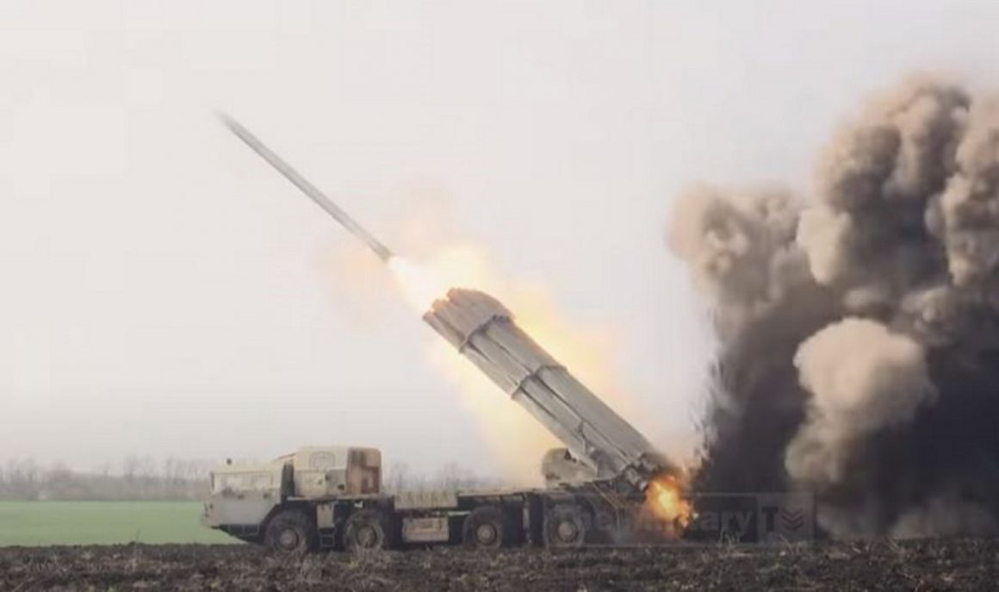
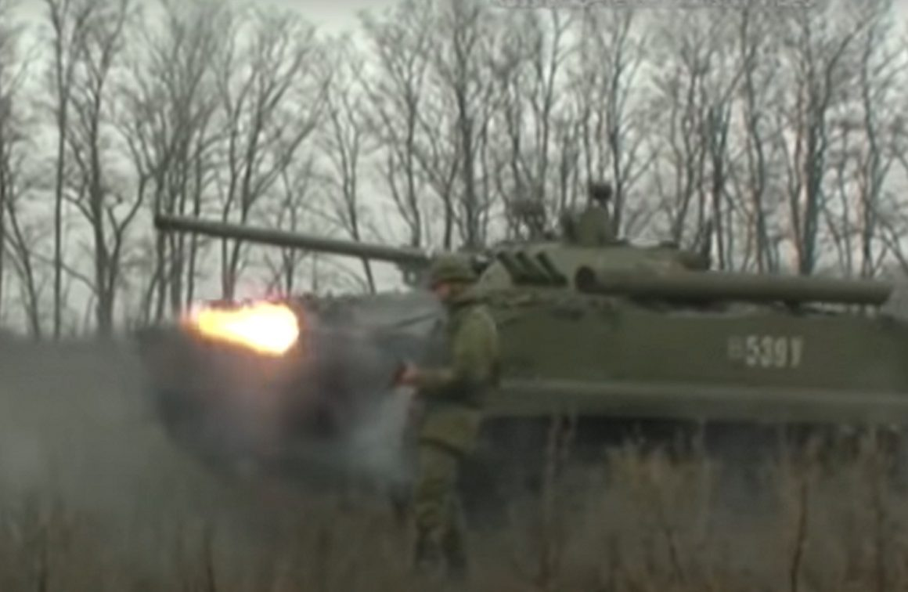

{kind=link}
 Students protest against the increase in tickets in Petrolina. Photo: Jamil Barbosa / Grande Rio FM
Students protest against the increase in tickets in Petrolina. Photo: Jamil Barbosa / Grande Rio FM
[This lan. PDF][This lan. ODT][This lan. MD][This lan. TXT][This lan. TXT LIST]
Please select your language 请选择你的语言:
Author: Comitê de Apoio
Description: On February 15, students from Petrolina (PE) public schools protested against the increase in tickets made on February 1.
Publish Time: 2023-02-23T10:20:45-03:00
Modified Time: 2023-02-24T17:14:08-03:00
Updated Time: 2023-02-24T17:14:08-03:00
Images: ['whatsapp-image-2023-02-15-at-10.53.58.jpg']
Section: Nacional
Tags: ['aumento', 'Passagem']
Type: article
Students protest against the increase in tickets in Petrolina. Photo: Jamil Barbosa / Grande Rio FM
On February 15, students from Petrolina public schools(PE)They protested against the increase in tickets made on February 1st. Asked bands and posters that charged the reduction of tariffs and free passage, the students camped in front of the City Hall after traveled downtown streets.
According to a note circulated by the student mobilization, “with this increase, Atarifa in Petrolina is now the most expensive in the Northeast and one of the most expensive dopaís, leading 19 capitals. In addition, the Atlantic-referring to the monopolistic company-received more than R $ 8 million from the city with giving giging that it was having damage to the pandemic, committing to non-compliance with the tariff ”.
In the municipality of Petrolina, Sertão Pernambucano, the urban bus fares increased from R $ 4.10 to R $ 5.00. The almost22%readjustment has generated revolt among workers, who denounce the precariousness offered, and demonstrations of students from public schools in the city.
Using public transport daily to go to work, Healthbucal Assistant, Salete Brito, told the report of and that the “increase is an absurd truth, an abuse against the population of Petrolina”. “Charging caroeles know, right? Now, improvement… zero!”, Said the assistant. Regarding the fleet's and the quantity, Salete claims to be insufficient. “Bus misses more to stop the number of the city's population. The population is immense for bus aquantity ”.
The Erica Raquel trade reports that the public transportation service of theity needs improvements: “You need to improve, right? They charge a very high value; increase and have no improvement!”. In the same tone, other workers who did not want to interview made their readjustment and demonstrated support for popular manifestations to the tariff increase that begin to be organized in the city.
When asked about the demonstrations, the population has shown support. “It has to manifest themselves. I myself passed in front of City Hall Paraver, ”said a city center worker who declined to be named.Written by: Support Committee of the São Francisco Valley
News Source: https://anovademocracia.com.br/pe-estudantes-protestam-contra-aumento-na-passagem-de-onibus-e-recebem-apoio/
Author: Giovanna Maria
Description: On February 15, a former federal policeman, owner of two weapons stores in Nova Iguaçu, was arrested with three other employees for “illegal sale” of firearms.
Publish Time: 2023-02-23T16:59:08-03:00
Modified Time: 2023-02-24T17:13:32-03:00
Updated Time: 2023-02-24T17:13:32-03:00
Images: ['fuzispolicialfederal.jpg']
Section: Nacional
Tags: ['Polícia Federal', 'Tráfico de armas']
Type: article
 Former Federal Police arrested for arms trafficking in Nova Iguaçu-Photo: Reproduction/TV Globo
Former Federal Police arrested for arms trafficking in Nova Iguaçu-Photo: Reproduction/TV Globo
On February 15, a former federal policeman, owner of two Emnova Iguaçu weapons stores, was arrested with three other employees for “illegal sale”(traffic)of firearms in the Baixada Fluminense. The operation was carried out the Federal Police and was the largest seizure of the corporation in the state of Rio de Janeiro. The name of the subject was not disclosed.
68 rifles were seized; 12 revolvers, of restricted calibers; 204 rifles and thousands of cartridges of various calibers, including them. Weapons, accessories and ammunition were not in the army's collection, which is a prerequisite for being sold in the country.
The seizure occurred in one of the areas with the highest presence of the so-called “militias”, composed mainly of police, former police, collectors, sports shooters and hunters(CAC’s), between others. Asásas under the domain of these mafia groups increased by 387.3% between 2006 and 2021. Today, the "militias" are considered the largest "criminal group" Dorio de Janeiro in the matter of dominated territories. The data are from the study of new studies of new illegalism(Gene)from the Federal Flumin University(UFF), in partnership with the Fogo Cruzado Institute.
A survey by the Globo Press Monopoly in 2022 in proceedings that they are in the RJ Court of Justice revealed that “militias” who work in state cities have cacs among their members. Since 2018, seven cacs accused or convicted of joint militias. In the rooms, they perform the functions of collector, armory, supplier Demunition and even killer, responsible for murdering disaffected from their pack.
In another case of 2020, after investigation that militiamen were in a “security rate” of residents and traders in the Vilar Dosteles neighborhood of São João de Meriti, agents of the Baixadafluminense Homicide Police Station(DHBF)Thiago Gutemberg de Almeida Gomes arrested, the Local Mafiosco, which was part of the CACS category.In conversations, Curisco narrated the terrorism practiced against the Lolocal population, between murders and beating. In one of them, he claimed that "battery" and gave "players in the head" of a resident who let the militia rate come across.
The arrest of the former federal police officer, who owned a weapon store and dealer dealer, proves that favela operations are useless in “combating drugs to organized crime”. Since 2007, Rio de Janeiro's police forces were responsible for 482 operations with high lethality in theometropolitan region(chakinas), with a balance of 1,962 dead. In these actions alone, 15% of all homicides for police intervention in the Greater Rio de Janeiro last 15 until 2021. Even in the middle of the pandemic, 189 residents were moved. In the first five months of 2021, the number of operations grew 34%.
These operations, which are promoted through the Armed Forces and Police Old Reactionary State, are actually control and cercoterritorial of a large mass of workers, residents of the favelas(that capital of RJ, represent about 22% of the population). Frente ao enormenúmero de trabalhadores privados dos direitos mais básicos que estãopermanentemente insatisfeitos com a condição de vida imposta, a única saídaque as classes dominantes oferecem é o aumento da violência e terrorismoreacionários. Enquanto isto, o velho Estado e seus agentes mantém sob o seucontrole o tráfico de armas e drogas, sendo os maiores articuladores ebeneficiários destes lucrativos negócios.
News Source: https://anovademocracia.com.br/rj-ex-policial-federal-traficante-de-armas-e-preso-com-arsenal-em-area-de-milicia/
Author: Gabriel Artur
Description: The end of January and early February was marked by great peasant mobilizations in the state of Bahia. From January 30th to February 13, about
Publish Time: 2023-02-23T17:56:25-03:00
Modified Time: 2023-02-24T16:25:45-03:00
Updated Time: 2023-02-24T16:25:45-03:00
Images: ['AtoBR349.jpg', 'svg+xml;base64,PHN2ZyB4bWxucz0iaHR0cDovL3d3dy53My5vcmcvMjAwMC9zdmciIHdpZHRoPSI5ODQiIGhlaWdodD0iMzk0IiB2aWV3Qm94PSIwIDAgOTg0IDM5NCI+PHJlY3Qgd2lkdGg9IjEwMCUiIGhlaWdodD0iMTAwJSIgc3R5bGU9ImZpbGw6I2NmZDRkYjtmaWxsLW9wYWNpdHk6IDAuMTsiLz48L3N2Zz4=', 'svg+xml;base64,PHN2ZyB4bWxucz0iaHR0cDovL3d3dy53My5vcmcvMjAwMC9zdmciIHdpZHRoPSI4NDgiIGhlaWdodD0iNTQwIiB2aWV3Qm94PSIwIDAgODQ4IDU0MCI+PHJlY3Qgd2lkdGg9IjEwMCUiIGhlaWdodD0iMTAwJSIgc3R5bGU9ImZpbGw6I2NmZDRkYjtmaWxsLW9wYWNpdHk6IDAuMTsiLz48L3N2Zz4=']
Section: Luta Pela Terra
Tags: ['Correntina', 'fecheiros', 'mineração', 'Tomadas de terra']
Type: article
 Peasants protest against land grabbing. Photo: Reproduction
Peasants protest against land grabbing. Photo: Reproduction
The end of January and early February was marked by great component mobilizations in the state of Bahia. From January 30 to February 13, about 1000 peasants participated in the mobilizations taking land, closing highways or occupying buildings of the old state.
Peasants protest and ask for asphalting in northern Bahia. Photo: Reproduction/TV Bahia
On January 30, about 300 peasants from Sento Sé, in the backlands of Bahia, blocked the passage of the trucks of the Australian imperialist mining company Iron on the BA-210 highway, claiming their immediate asphalting. Oscamponese denounce that heavy traffic of heavy vehicles for ore flow has caused numerous health damage, rivers and plantations from the region's communities.
In a document presented to the City Hall of Sento Sé and the imperialist mining company in 2021, the communities require improvements to be executed to contain the mining company's installation, such as paving of communities, basic sanitation that ensures drinking water supply, as well as improvements in School buildings, health center implementation, among others.
On February 13, in Correntina, in the west of the state, peasants from traditional background and pasture closure made a NABR 349 protest in complaint to the latest land grabbing offensive in the region. He joined to buy an old Document and made an area of an area of approximately 15 million in the Valley of the Arroado Valley.The protest of the peasants is yet another episode of the hard struggle that wage the fees against landlord and grabbing, and their paramilitary flocks. Desesetember of 2022 private landlords are terrorizing more than 20 peasant communities through invasions, destruction of the Workners, persecution and threats of deaths. The performance of the deextrema-right gang occurred in the municipalities of Correntina and Santa Maria da Vitória, in the Bahian Cerrado. The attacks occurred even after the peasants sent the opportunistic government of Rui Costa(PT)A letter demonstrating how the paramilitary pack, which brings together at least 18 men.
Peasants occupy Cabrália City Hall. Photo: Reproduction
On 02/06, in Santa Cruz de Cabrália, in the southern end of Bahia, about 200 companies organized by the Landless Rural Workers Movement(MST)occupied the headquarters of the City Hall. The peasants require the City Hall to serve the parts that have been requested for more than two years in the areas of service of the municipality. The main requirements are related to the access and road maintenance, as the current state of the roads makes it impossible to acommal students, access to the health post and the marketing of the agricultural production of settlements. In addition, the sitting families(about 600 peasants)They also require improvements in health conditions, medical commemoration and maintenance of the region's post; Lighting in colective areas such as school and road; Construction of bridges and better conditions for the production of family farming, among other claims.
In a note, the Landless Rural Workers Movement(MST)states that the reactionary agnelo Santos reactionary(PSD)It has treated the guidelines of the workers and peasant workers with neglect and that families require responses from the city. The peasants denounce that in many moments the mayor received the representatives of the communities, made, and did not perform them. In addition, the mayor suspended the services in the detainee, coordinated by the Municipal Health Secretariat.On 01/30, about 50 peasant families occupied the headquarters of the extinct Bahian agricultural development(None), at Sinésio Tripp Farm, located between the municipalities of Jaguaquara and Itiruçu. According to the leadership of the occupation, the company never served the interests of the peasants, and its lands, belonging to the Bahia State Government, only serve for funds of land auctions. In the following days, more peasants have been to the occupation, which now has 200 families. The camp was named Osmar Azevedo, leader of the peasant struggle in Bahia who helped advise the MST in the state.
Already on 02/05, about 50 families occupied Fazenda São Jorge Correia.Juntas, the two farms have over 3,200 hectares of land. The areas are already being used to plant gardens and animal breeding.
On 02/06, 178 peasant families living and producing at CampoClaudia Sena, located in the municipality of Itabela, in the far south of Bahia, were dumped through an eviction order signed by Judge Robertocosta de Freitas Junior. Families were removed from the site, and the plantations were destroyed. The judicial decision prohibited workers and workers to use vehicles to withdraw their belongings. At the moment, families are camped on the banks of the Destrada, about 3 km from the camp site.
According to the MST, in ten months of judicial dispute, this is the unfavorable third party to the camped families. The movement states that the judiciary has shown “rigor” to guarantee the interests of the lattificee and denied requests that guarantee the rights of camfononers.
Bahia is, according to the Conflict Report in the 2021 CPT field, a state in the number of agrarian conflicts in Brazil. The state, according to the all -strand “land structure in Bahia, Brazil: an analysis from the optics of Gini”, 2018, had, in the year prior to the study, more than 230makers with land concentration considered strong to very strong, and 8 of them had concentration very strong land the absolute. The data were vasable under the gini index. Since 2017, the Land Concentration Index has met throughout the country.
News Source: https://anovademocracia.com.br/camponeses-se-mobilizam-com-ocupacoes-e-protestos-e-estremecem-a-bahia/
Author: Alan Warsaw
Publish Time: 2023-02-24T05:04:18+00:00
Update Time: 2023-02-24T18:04:54+00:00
Images: ['1-800x445.jpg']
Tags: ['Bhaskar', 'Bijapur', 'Bijapur District', 'Chhattisgarh', 'CPI (maoist)', 'CPI(maoist)', 'India', 'Maharashtra', 'Maharashtra State', 'Naxal', 'naxalites', 'naxals', 'police', 'Political Prisonner', 'PPW in India', 'Special Operation Squad', 'Vella Veladi']
Categories: ['India', "People's War", 'Political Prisoners']
Gadchiroli District, February 24, 2023: A suspected Naxalite was arrestedin Maharashtra’s Gadchiroli district, police said on Friday.
Based on intelligence input, an anti-Naxalite operation was launched by theSpecial Operation Squad(C-60)of police in Dhamrancha forest on Thursday,said district Superintendent of Police Neelotpal. Vella Veladi(35), residentof Bijapur in neighboring Chhattisgarh, was arrested during the operation, hesaid.
He had been associated with Naxalites since 2001 and helped `Bhaskar’, asenior Naxalite, escape from Tekameta forest encounter on December 23, 2022,the SP said.
A court remanded him in police custody till February 28, 2023.
Source : https://theprint.in/india/suspected-naxalite-held-in-maharashtras-> gadchiroli-district/1397201/
News Source: https://www.redspark.nu/en/peoples-war/suspected-naxalite-arrested-by-police-in-gadchiroli-district/
Author: fannyhill
Description: The underworldly Inter war in progress in Ukraine had a new accelerated one after the born summit of Ramstein who decided a massif I ...
Time: 2023-02-24T10:00:00-08:00
Images: ['foglio%20genova_page-0001.jpg', 'foglio%20genova_page-0002.jpg']
 The Inter -current Inter war in Ukraine had a new accelerataDope The NATO summit of Ramstein who decided a massive sending of all kinds of arms of an offensive nature for the purpose not to defend the ukrained in the invasion but to support the counter -offender aimed at resuming The areas Donbass and Crimea and place the US/ NATO and the Imperialist countries of Europeiai borders of Russia, ready to take advantage of backward and weaknesses to crisis the reactionary regime of Russian Imperialism of Putinfino to bend the military political ambitions and resize its pesostrategical and economic. It is clear that in this perspective passosucessive is the world fire in the forms that the relationships of forcing will be and that certainly does not exclude the use of tactical nuclear or strategicoche nuclear is.
The Inter -current Inter war in Ukraine had a new accelerataDope The NATO summit of Ramstein who decided a massive sending of all kinds of arms of an offensive nature for the purpose not to defend the ukrained in the invasion but to support the counter -offender aimed at resuming The areas Donbass and Crimea and place the US/ NATO and the Imperialist countries of Europeiai borders of Russia, ready to take advantage of backward and weaknesses to crisis the reactionary regime of Russian Imperialism of Putinfino to bend the military political ambitions and resize its pesostrategical and economic. It is clear that in this perspective passosucessive is the world fire in the forms that the relationships of forcing will be and that certainly does not exclude the use of tactical nuclear or strategicoche nuclear is.
 The invasionerussian of Ukraine which reaches February 24 the first year is increasingly being achieved as an offensive step of Russian imperialism dictated by reasoning that, however, far from having restored the weight of Russia, he grabbed its downsizing process, has put On the carpet the realports of force existing currently in the field of imperialism.It is useless to repeat all the economic factors below this war, we have already written and denounced in numerous publications and flyers, which became public domain in the international opposition movement to imperialism and war. The point is time to understand the injury game worldwide, in the different territories of the world, in our country.
The invasionerussian of Ukraine which reaches February 24 the first year is increasingly being achieved as an offensive step of Russian imperialism dictated by reasoning that, however, far from having restored the weight of Russia, he grabbed its downsizing process, has put On the carpet the realports of force existing currently in the field of imperialism.It is useless to repeat all the economic factors below this war, we have already written and denounced in numerous publications and flyers, which became public domain in the international opposition movement to imperialism and war. The point is time to understand the injury game worldwide, in the different territories of the world, in our country.
On a world scale it is right and necessary to loudly request that I stopped and the escalation of
This war, it is right to respond to the desire for peace that comes to the fire of the surrounding territories and other parts of the world, but Ilpunto is that these requests cannot be accepted by the powers that have triggered the current spiral and that indeed the They feed the alservice of the imperialist bourgeoisie and, in particular, of the parts of the Sielslegate to the war industry and which draw immense profits from it. Instead of overturning the imperialist governments engaged in the war, without stopping the reactionary imperialist governments that are sucked in valenti honors from the spiral Those, it is not possible to predict and determine the firm of the warfounder march.
Consequently, we must return to the strategic and analytical clarity of the world capitalist/imperialist world of the world who taught us and that Hannopraticated during the previous world wars the scientific masters of the working class, the world proletariat, of the oppressed peoples, Marx, Lenin, Mao. In particular, Lenin has traced the way and the strategy of opposing the imperialist war the revolution in imperialist countries as the heart of the motion of the peoples oppressed by the imperialism that existononel the current state of the world. Mao has clarified that either the proletarious movement with his struggle will stop the war or it will be necessary to oppose the revolution of proletarians and peoples who, in the conditions of the war, was also with the use of nuclear weapons, increases and accelerates, and shows all the need of a fundamental fight to overthrow governments, states, the system that drags the proletarians and peoples in the world disaster.In Italy it is urgent that the working class, the workers all, the Massepopolari, all the forces contrary to the war, to the war action of the Property Government take the field and in struggle in all possible forms perfecting participation in the war of Italian imperialism , of the suostat and its government. This struggle is the most concrete of the struggles and also important. This appears even clearer with the new government, settling on September 25, reactionary and imperialist beam of Meloni. This government, in perfect continuity with the government that preceded it in charge of the explosive phase of the tendency to the war established for the invasion of Russian imperialism in Ukraine of 24 February 2022, he was deployed in the name of atlantism and belonging to NATO with USA/NATO Ipiani, aiming to make Italy a prominent elderly elderly in the increasingly direct participation in the war Care me and soldiers, lined up according to the indications of the current Deicompiti Division of NATO and according to the specific interests of the masters Italian in the other scenarios, primarily Balkans, Mediterranean.
The government and fascist nature of the government has constituted a load of 90ai pre -existing plans of imperialism, a zeal of servants, which is historically characteristic of the fascists, which makes the team of allotifadeli melons, servants and active supporters of the extension of the war conflict Edella progressive participation wherever there are interests and profits Italians to defend and expand. The Meloni government is the Government of the State and Private War Industry. Crosetto is a plausier procurer already in operation before he became minister. This government is Ilgoverno del Eni who dusts off Mattei's figure in the guise of interestsimperialists and spaces to be conquered in the strategic sector of energy. Ilgoverno Meloni is the government of new colonialism in North Africa, Tunisia, Libya. The Meloni government is the government of the European Zoppa duck that acts by the fifth column of US imperialism in the contradiction/Europe.To all this there is no other way than a response of struggle in all ICAMPI, from those that directly affect wages, the conditions of proletarian life and the masses, to those that affect all the fields of the hesocity, institutions, culture, etc. But it is necessary that this core assuming strength, unity and address and is concentrating in the fight in the imperialist war and the role of Italy, with the aim of telling the government, fighting the imperialist state, putting it in chrysid, to make it difficult for the its external action. This struggle that is mass of mass cannot be peaceful because imperialism and its own sovers are with violence, the strength that impose and will increasingly impose interests and action; Nor can it be of pure movements, we hope for intense, classists and combatives, from factories, to the territories, to the squares, but demands determined construction, accelerated of the tools for a winning struggle.
Construction, and here we return to the masters who have provided us with the analysis and the way in the fight against the imperialist war and that they had the theoretical, political, programmatic heritage to build glists of this struggle: the Marxist-Leninist-Maoist Communist Party; The united class and anti -fascist and anti -imperialist mass, the new resistance force, to conduct the war on the war, and now open the way to a change of strength relationships that puts in gradually and masses to oppose, oppose and finally obtain it is On the path of the socialist revolution, in unity and in close bond -interactionist with the proletarians and peoples who travel this samestrada.
News Source: https://maoistroad.blogspot.com/2023/02/italy-proletarians-and-imperialist-war.html
Author: Alan Warsaw
Publish Time: 2023-02-24T10:32:21+00:00
Update Time: 2023-02-24T18:35:47+00:00
Images: ['ukraine-1024x587-1-800x445.jpg']
Tags: ['Anti-Imperialism', 'Azov Battalion', 'Biden Government', 'Bulgaria', 'China', 'communist party of the philippines', 'CPP', 'CPP-NPA-NDF', 'CPP-NPA-NDFP', 'Czech Republic', 'Donbass Region', 'Donetsk', 'EDCA', 'Enhanced Defense Cooperation Agreement', 'France', 'Germany', 'Hungary', 'Japan', 'Joe Biden', 'Lenin', 'Lithuania', 'Lugansk', 'Mutual Defense Treaty', 'National Democratic Front of the Philippines', 'NATO', 'NDFP', "new people's army", 'NPA', 'Philippine Revolution', 'Philippine Revolution Web Central', 'philippines', 'Poland', 'PPW in the Philippines', 'Romania', 'Russia', 'South Korea', 'Soviet Union', 'UK', 'Ukraine', 'United Kingdom', 'United States', 'US', 'USA', 'USSR', 'V.I. Lenin', 'VFA', 'Visiting Forces Agreement', 'Vladimir Lenin', 'Warsaw Pact', 'Zelensky Government']
Categories: ['China', 'France', 'Germany', 'Imperialist States', "People's War", 'Philippines', 'Russia', 'USA']
Communist Party Of The Philippines
February 24, 2023
The Communist Party of the Philippines(CPP)joins peace-loving peoples aroundthe world in condemning the US imperialists and its NATO allies forceaselessly pouring weapons and military equipment to Ukraine in its effort tocontinuously stoke and prolong its proxy war against imperialist rival Russia.Ending US and NATO intervention and aggression will serve to deescalate thearmed conflict in Ukraine and pave the way for ending and settling the waracross the negotiating table.
Peaceful dialogue should be carried out in order to resolve the war in Ukraineconsistent with the aspirations of the Ukrainian people for peace, freedom anddemocracy, as well as the aspiration of the Russian-speaking population of theDonbass region for their right to secession and national self-determination.There must be an end to social, political and cultural policies directedagainst Russian speaking Ukrainians perpetrated by fascist forces in order toestablish mutual respect and peaceful co-existence between Russia and Ukraine.
The now year-long war has resulted in large numbers of deaths with estimatesranging from a few tens of thousands to 200,000 soldiers and civilians on allsides of the conflict. The military on both sides of the conflict haveresorted to attacking civilian infrastructure leading to widespreaddestruction and hardships. Millions of Ukrainians have been driven away fromtheir homes and economically displaced. The broad masses of people in theRussian-speaking regions of Donbass continue to be subjected to US/NATO-supported Ukrainian artillery attacks after the governments of Lugansk andDonetsk declared independence and established control of the region underRussian military power.
While the broad masses of working people in Ukraine suffer, the monopolycapitalists, especially the arms manufacturers and financial speculatorscontinue to pocket huge amounts of profits. Giant finance capitalists andmonopoly companies continue to take advantage of the Ukrainian war to engagein market speculation in the prices of key commodities including oil andgrain. Disruptions in fuel supplies to Europe caused by US sanctions againstRussian natural gas caused widespread suffering to people during winter.Biden’s recent trip to Ukraine in which he promised more military aid andgoaded the Zelensky government to continue the war, clearly shows that Ukraineis being used as a proxy by the US/NATO in its war with imperialist rivalRussia. US military advisers have long been embedded in the Ukrainian army,even as US combat troops are in Poland ready to engage in direct action. USmilitary officials have openly signified armed intentions against Russia.Incited by the US/NATO imperialists, the Zelensky government has consistentlyrefused to heed calls for peaceful dialogue and repeatedly rejected offers oftruce and negotiations.
In response to Biden’s war incitements, Russia announced suspension of thearms control treaty with the US and placed its strategic arms systems tocombat duty. It continues to heighten its war efforts to push back against USand Ukrainian bombardment of the Russian-speaking territories in the proximityof Russia’s borders. It has put its nuclear forces to maximum alert, raisingthe threat of uncontrolled nuclear escalation.
The war in Ukraine is the result primarily of more than three decades of USimperialist expansionism in Eastern Europe since the dissolution of the SovietUnion in 1991. In violation of the 1990-1991 Minsk agreement wherein the USand NATO gave assurances it will not admit countries formerly belonging to theUSSR-led Warsaw Pact, the US pushed the expansion of the NATO militaryalliance from the eastern border of Germany towards central Europeancountries. The NATO alliance admitted such former Warsaw Pact countries asPoland, the Czech Republic, Hungary, Lithuania, Bulgaria, Romania and others,inching towards Russia’s western borders. Russia has long regarded theexpansion of the NATO military alliance as aggressive acts and regardedUkraine’s inclusion as a red line.
The US/NATO proxy war in Ukraine against Russia is a manifestation of thecontinuing crisis and moribund state of the monopoly capitalist system. Leninpointed to the constant push to redivide the world among the imperialistpowers as they seek to continuously expand its spheres of investments andhegemony. Among the strategic aims of the US in waging a proxy war in Ukraineis to take over Russia’s large European market of natural gas, as well asseize control of the rare earth mineral resources in the Donbass region.The broad masses of the Filipino people must stand firmly to defend itsnational sovereignty and pursue an independent and peace-loving foreignpolicy. They must militantly oppose attempts by imperialist powers to use thePhilippines as part of their wars. They must carry forward their demand forthe withdrawal of all foreign troops, nuclear-powered warships carryingnuclear weapons, missiles and other military equipment in the country. Theymust amplify their call for the dismantling of all foreign militaryfacilities, which invariably serve as magnets for attacks. They must opposethe planned Balikatan war exercises and 400 other military exercises to beconducted by US troops in the country. They must call for the abrogation ofthe Mutual Defense Treaty, the Visiting Forces Agreement(VFA), the EnhancedDefense Cooperation Agreement(EDCA)and other unequal military treaties whichundermine Philippine sovereignty and pull the country into the vortex ofinter-imperialist wars.
The proletariat around the world must act vigorously and lead in building andstrengthening international solidarity among all anti-imperialistorganizations, movements and countries in order to mobilize the greatestnumbers of people to demand an end to the US/NATO war in Ukraine againstRussia, and to US imperialist war-mongering and war preparations elsewhere inthe world.
Source : https://philippinerevolution.nu/statements/oppose-imperialist-us-> and-nato-schemes-to-stoke-and-prolong-the-war-in-ukraine/
Author: SERVIR AL PUEBLO
Publish Time: 2023-02-24T10:37:10+00:00
Modified Time: 2023-02-24T10:37:10+00:00
Description: Durante in recent weeks, activists from different parts of the State have distributed the newspaper "to serve the people" among the masses. A copy can already be obtained by sending an email. AND…
Images: ['image-22.png']
Type: article
 Durante in recent weeks, activists from different parts of the state have repeated the newspaper "serve the people" among the masses. It can already be obtained a copy by sending an email. The content of the number is the following:
Durante in recent weeks, activists from different parts of the state have repeated the newspaper "serve the people" among the masses. It can already be obtained a copy by sending an email. The content of the number is the following:
International. Historical news: The International Communist League is born!
SPANISH STATE. The genocidal massacre in Melilla: a genocidal crime of Spanish imperialism
Madrid . The Madrid Revolutionary Collective denounces the new Foreign Law
València . News of mass struggles and revolutionary activity
Málaga . About fascism in Malaga
Elche . Revolutionary activity during the footwear strike.
Albacete . Interview with a woman from Chabolist settlements.
Special dossier . Poet of the People and Communist Combatter: 80 years without Miguel Hernández
News Source: https://serviralpuebloperiodico.wordpress.com/2023/02/24/numero-3-de-servir-al-pueblo-disponible/
Author: SERVIR AL PUEBLO
Publish Time: 2023-02-24T10:57:18+00:00
Modified Time: 2023-02-24T10:57:18+00:00
Description: Throughout last week several agitative actions took place in the area of the Albacete University Campus.
Images: ['image-25.png', 'image-30.png', 'mexico2.jpg']
Type: article
02/24/2023
Throughout last week several agitative actions took place in the Lazona of the Albacete University Campus.
In one of the accesses, next to the library, a banner appeared by the reading and dissemination of the revolutionary press, under the motto “The presaburgues lies!Support, read and spread the revolutionary press ”, with the logo and to serve the people.
 This was not the only action that took place these days, but we also could see some graffiti next to the faculties of nursing and humanities, with slogans in solidarity with the Mexican people at one time they defend repression of the revolutionary movement.
This was not the only action that took place these days, but we also could see some graffiti next to the faculties of nursing and humanities, with slogans in solidarity with the Mexican people at one time they defend repression of the revolutionary movement.
On the walls you can read, together with hoces and hammers, the slogans "solidarity with the current of the Red Sol People" and "What live the fight of the Mexican Pueblo!"

 Commercial
Commercial
News Source: https://serviralpuebloperiodico.wordpress.com/2023/02/24/agitacion-revolucionaria-en-la-universidad-de-albacete/
Author: SERVIR AL PUEBLO
Publish Time: 2023-02-24T10:57:32+00:00
Modified Time: 2023-02-24T10:57:32+00:00
Description: Next we collect some images that we have been publishing in the newspaper and that have reached our email.
Images: ['image-26.png', 'image-28.png', 'solidaridadmexico3-1.jpg', 'solidaridadmexico2-1.jpg', 'image-24.png', 'image-23.png', 'image-27.png', 'image-29.png', 'mexico2-1.jpg']
Type: article
02/24/2023
Next we collect some images that we have been publishing in El Periódico and that have reached our email.

 ## Elche
## Elche 


 ### Albacete
### Albacete

 Commercial
Commercial
Author: fight
Description: While the confederals continue to do more than hypocritical complaints by saying for years "it takes more security in the factory" while they have endorsed ...
Time: 2023-02-24T11:21:00+01:00
Images: ['Fincantieri-Cantieri-navali-Palermo-7.webp']
While the Confederals continue to do more than hypocritical complaints saying as the "it takes more safety in the factory" while they have endorsed all the lenles in the sale/attack on the working condition of the workers and workers.
Organize, join, connect with the workers who already fight, face a class of class against the exploitation of masters, against the government, now increasingly reactionary, at their service, against increasingly more unions in the capital system.

News Source: https://proletaricomunisti.blogspot.com/2023/02/24-febbraio-soldi-per-la-salute-e.html
Author: Giovanna Maria
Description: In February, municipal and state teachers from all over Brazil performed strikes, demonstrations and blockages demanding their floor and salary adjustment for the year 2023.
Publish Time: 2023-02-24T14:33:14-03:00
Modified Time: 2023-02-24T17:13:13-03:00
Updated Time: 2023-02-24T17:13:13-03:00
Images: ['image1.png', 'svg+xml;base64,PHN2ZyB4bWxucz0iaHR0cDovL3d3dy53My5vcmcvMjAwMC9zdmciIHdpZHRoPSI2OTYiIGhlaWdodD0iMzU0IiB2aWV3Qm94PSIwIDAgNjk2IDM1NCI+PHJlY3Qgd2lkdGg9IjEwMCUiIGhlaWdodD0iMTAwJSIgc3R5bGU9ImZpbGw6I2NmZDRkYjtmaWxsLW9wYWNpdHk6IDAuMTsiLz48L3N2Zz4=', 'svg+xml;base64,PHN2ZyB4bWxucz0iaHR0cDovL3d3dy53My5vcmcvMjAwMC9zdmciIHdpZHRoPSI2MTUiIGhlaWdodD0iMzE1IiB2aWV3Qm94PSIwIDAgNjE1IDMxNSI+PHJlY3Qgd2lkdGg9IjEwMCUiIGhlaWdodD0iMTAwJSIgc3R5bGU9ImZpbGw6I2NmZDRkYjtmaWxsLW9wYWNpdHk6IDAuMTsiLz48L3N2Zz4=', 'svg+xml;base64,PHN2ZyB4bWxucz0iaHR0cDovL3d3dy53My5vcmcvMjAwMC9zdmciIHdpZHRoPSI5ODQiIGhlaWdodD0iNjA5IiB2aWV3Qm94PSIwIDAgOTg0IDYwOSI+PHJlY3Qgd2lkdGg9IjEwMCUiIGhlaWdodD0iMTAwJSIgc3R5bGU9ImZpbGw6I2NmZDRkYjtmaWxsLW9wYWNpdHk6IDAuMTsiLz48L3N2Zz4=', 'svg+xml;base64,PHN2ZyB4bWxucz0iaHR0cDovL3d3dy53My5vcmcvMjAwMC9zdmciIHdpZHRoPSIxMDI0IiBoZWlnaHQ9IjcwMCIgdmlld0JveD0iMCAwIDEwMjQgNzAwIj48cmVjdCB3aWR0aD0iMTAwJSIgaGVpZ2h0PSIxMDAlIiBzdHlsZT0iZmlsbDojY2ZkNGRiO2ZpbGwtb3BhY2l0eTogMC4xOyIvPjwvc3ZnPg==']
Section: Nacional
Tags: ['professores', 'Protestos', 'reajuste salarial']
Type: article
 Photo: Municipal teachers protest in Carapicuíba requiring salary adjustment. Photo: Reproduction/ G1
Photo: Municipal teachers protest in Carapicuíba requiring salary adjustment. Photo: Reproduction/ G1
In February, municipal and state teachers from all over Brazil reported strikes, demonstrations and blockages demanding their floor and readjustments to the year 2023. The mobilizations took place in the states of São Paulo, Tocantins, Paraná, Rio Grande do Norte and Ceará.
The national salary floor is R $ 4,420.55, but is not always applied in facts states and municipalities. The situation of the teachers is such that, in the state schools of Rio Grande do Sul and the Federal District, teachers have not had a salary adjustment for at least 8 years.
In 2021, a survey by the organization for cooperation of economic development(OECD)He pointed out that the salary of Brazilian teachers in the end of the final elementary school is the lowest among 40 countries. In addition, the study showed that the income of Brazilian teachers at the beginning of the carrier are lower than those of teachers in countries such as Mexico, Colombiae Chile.
To make matters worse the precarious situation of the teaching profession, currently four out of 10 teachers on state networks have temporary contracts, receiving lower salaries and less rights. In all, there are 560 thousand public teachers throughout the country living with temporary work contracts.
In the city of Carapicuíba, on 02/17, municipal teachers manifest themselves in front of the City Council and blocked the street against an insufficient salary decompletion project for the category, approved by the Chamber. Complementation will serve only 100 teachers, according to the president of the Carapicuíba education professionals, as opposed to 3,000 that will continue to be lagged. Even though complementation itself is below the readjustment to 2023, which is 15%.
The replacement would be given only to teachers who receive below the padonational, based on gross salary, and would not represent an increase for all municipal teachers according to the adjustment. Since 2017 the readjustments applied to the teachers of Carapicuíba have been below inflation.
Teachers manifest themselves in front of the São José do Rio Preto City Hall.Foto: Reproduction/G1
In the municipality of São José do Rio Preto, hundreds of teachers manifest themselves in front of the City Hall requiring a 14.95% readjustment in salaries, closing the city's avenue. The application of the readjustment was vetoed by the mayor and the teachers required the reversal of the veto.
Fish teachers(TO)start strike and perform demonstration on 08/02.FOTO: Reproduction/G1
The municipal fish teachers, in the south of the state, began a strike and read a demonstration on 02/08. Among the requirements are the collection of the readjustment of the teaching floor referring to the year 2022(33,24%)e 2023(14,9%)in the career, according to the law of the Positions Plan, Careers Eremunerations(PCCR)municipal teaching and the payment of progressions.
Municipal teachers protest and claim floor payment and readjustments in Fortaleza - Photo: Kid Jr./SVM
Municipal teachers from Fortaleza protested on the morning of January 30, in front of the City Hall, claiming the payment of the salary floor and orejustment of 14.95%. Even under heavy rains, the workers showed on the spot. RN: State teachers reject insufficient government proposals and the strike for strike
At the assembly, state teachers reject proposal from the RN government and the strike for strike. Photo: Lenilton Lima
The teachers of the state school system rejected the government's proposals to update the 2023 salary floor, with the proposed value of the national floor. The workers approved the holding of a NovaSambeia on February 27 with an indicative of strike.
News Source: https://anovademocracia.com.br/professores-realizam-greves-e-protestos-exigindo-reajuste-salarial-em-todo-pais/
Author: Rosa Minine
Description: Saturday, 02/25, from 14h, the Collectives Ria and Mestre D ' Arms holds the 9th Sarau da Resistance, at the Ria Cultural Center, in DF. The event has
Publish Time: 2023-02-24T15:27:21-03:00
Modified Time: 2023-02-24T15:30:30-03:00
Updated Time: 2023-02-24T15:30:30-03:00
Images: ['ComiteDF.jpeg']
Section: Agenda Cultural
Tags: ['África Tática', 'Agenda Cultural', 'batalhas', 'Coletivos RIA', 'desafios', 'DF', 'Família Mestre D'armas', 'mic aberto', 'poesia', 'rap', 'Sarau Resistência']
Type: article
 Photo: Disclosure of the event
Photo: Disclosure of the event
Saturday, 02/25, from 14h, the Collectives Ria and Family Mestre d'Arma performs the 9th Sarau da Resistance , in the Cultural Center Ria , in DF . The event has a rap show of the Africa Tactical (Planaltina), rhyme battles and challenges, size street, battle of the source,(Taguatinga), besides poetry, open microphone and vegan food.
Address: Hotel Sector - Projection C, Taguatinga Sul, DF.
Tickets: 1 kg of non -perishable food.
News Source: https://anovademocracia.com.br/9o-sarau-da-resistencia-show-do-africa-tatica-batalhas-desafios-poesia-mic-aberto/
Author: socialistiskrevolution
Publish Time: 2023-02-24T15:29:36+00:00
Modified Time: 2023-02-24T15:29:36+00:00
Description: A year has now passed since Russia's War of Agression was released against Ukraine. This war has killed tens of thousands of people and driven millions on the run. The Ukrainian people and the proletariat are fighting ta…
Images: ['th-3561801922.jpeg', 'billede-3.png', 'lso05623-71949415-1.jpeg']
Type: article
Categories: ['Uncategorized']
 A year has now passed since Russia's War of Agression was released against Ukraine. This war has killed tens of thousands of people and driven millions on the run. The Ukrainian people and proletariat are fought tapped and heroic for national freedom, even in the light of the absence of the Communist Party.
A year has now passed since Russia's War of Agression was released against Ukraine. This war has killed tens of thousands of people and driven millions on the run. The Ukrainian people and proletariat are fought tapped and heroic for national freedom, even in the light of the absence of the Communist Party.
The reason for the war is the contradiction between the imperialist countries. Modification consisting of both controversy and the lead. In the war in Ukraine's example, mainly between Yankee imperialism and Russian imperialism. The War of the War is within the general and last crisis of imperialism, the 50 to 100 years, described by President Mao Tsetung, an era where imperialism and the world reaction will be lapsed in a complex of wars of all kinds, an era of incomprehensible with any other point of world history.
 The war in Ukraine is such a war and its complexity has been proven by decok waves, which it has sent around the rest of the world, especially in the Europe.
The war in Ukraine is such a war and its complexity has been proven by decok waves, which it has sent around the rest of the world, especially in the Europe.
The invasion of Ukraine has affected the entire imperialist chain, which is harvested in the fact that many basic goods such as food, fuel, gas and electricity have become much more expensive for the proletariat. The influence of this war on the entire imperialist system has shown how deep a decay that imperialism is in how the crisis of imperialism immerse itself more day by day. At the same time, the bourgeoisie lets the proletariat pay the crisis through inflation, the workers' paychecks thus become less worth for the ruling class.
Pauperization has spread throughout Europe, also in Denmark, where a record number applied for Christmas help last year. Several have been in line for food at diversity welfare organizations and the masses are left with the choice between either the prioritize to pay for the rent, the electricity or for the food from month to month.
Since the war, the bourgeoisie has repeatedly proven that a _ defense of Forteuropa_ is a pretext for the working class attack. The most notorious example is the abolition of one of our holidays, such as the bourgeoisie, without at the lid of their intentions, uses to fund the biggest build -up since World War II, and to support Zelenskyj's fascist legions.The bourgeoisie has made temporary concessions to the working class Ilyset of the abolition of Great Prayer Day through an agreement with relatively -sized breadcrumbs to the working class in an attempt to bribe us to the abolition of a day off. In this way, they try to take the brod and the great moment out of the movement of the defense of the proletariat rights, by bribing, mainly the Social Democrats, hinterland in spending.
However, this will only be a temporary and short -term admission, a map -sector of two years, against a permanent abolition of a day off.
 These attacks and this enormous militarization are combined with Denmark's entry into imperialist military cooperation in Europe, a size concentration of Danish troops posted, especially in Eastern Europe, as well as creating and larger lead with Yankee imperialism in Greenland. Military service is expanded, also to women, under the pretext of reactionary imperialist feminism. At the same time, the imperialist bourgeoisi has made Denmark a march-land and a military-logistic hub for Yankee troops that are forwarded to the rest of Europe, especially Eastern Europe.
These attacks and this enormous militarization are combined with Denmark's entry into imperialist military cooperation in Europe, a size concentration of Danish troops posted, especially in Eastern Europe, as well as creating and larger lead with Yankee imperialism in Greenland. Military service is expanded, also to women, under the pretext of reactionary imperialist feminism. At the same time, the imperialist bourgeoisi has made Denmark a march-land and a military-logistic hub for Yankee troops that are forwarded to the rest of Europe, especially Eastern Europe.
The build -up, all these reactionary laws, attacks and actions counter -class, have demanded a new way of reigning for the bourgeoisie. Mette Frederiksen had already 3 months after the war in Ukraine to the airing idea of a government "across the middle". This was made a reality, the Davalget was triggered a year before Mette Frederiksen's reign of the reign. the city in 1940.
The already infamous 'SVM government', a majority government, has meant the encentralization of the power of the executive power [the government], which now in principle can make legislation around the legislative power [the entire parliament]. This form of government is a continuing and refined form, for The Bourgeoisie's way of reigning, as they did during the pandemic, namely by almost reigning paths through press meetings and taler to the nation. It is necessary the gutgeoisie for it to be upgrading the country in the preparation of new imperialist wars.The Ukrainian people are tapping against the Russian aggressors and parential democratic energy has been the reason why Russia did not have the rapid victory that they hoped for, at the same time, the moral among Manderussian soldiers is lower than it has been for a long time. The Russian and Ukrainian people have a close bond linked through the great socialist October revolution, the construction of socialism and the defense against Hitler-fascism's aggression, the somerialists, neither in Russia nor the United States can never break. The Ukrainian people also do not want to be pieces in the imperialists' games and will be feding their weapons against the traitor Zelensky after Putin's soldiers have been displaced.
We must go against the imperialists' attempts to exploit the war in Ukraine to be prepared or enter into new imperialist wars, and if they break out, huge to turn them into revolutionary wars. We must go against the preparation of the world division through a new, third imperialist world war, and if it breaks out, fighting to turn it into a world people war. We have to fight for our rights, which the bourgeoisie is trying to take from us.
The war and the crisis are an expression of the imperialists weakening day by day, that they can no longer win wars, that the masses are clear and want revolution. What they are missing is organization and leadership that can only be properly given the proletariat's and the masses' the communist party , based on Marxism-Leninism-Maoism, mainly Maoism and President Gonzalosalmen Feed, ie. Gonzalo thinking. A party that we must fight for to constitute or reconstituted in countries, such as Denmark, where it is not long.
Advertisement
Author: Tjen Folket Media
Description: On February 24, it is 1 year since Russian imperialism released the full -scale invasion of Ukraine, a turning point in European history after World War II.
Publish Time: 2023-02-24T15:43:32+00:00
Modified Time: 2023-02-24T15:46:32+00:00
Images: ['raketter-i-ukraina-1160x687.jpg']
Tags: None
Category: 'Europa'

*By a commentator for the Earn Folket Media.
On February 24, it is 1 year since the Russian imperialism released the venue invasion of Ukraine, a turning point in European history after World War II.
24 . February: Show opposition to the imperialist war!There have been a number of wars in Europe after World War II, especially the Ijugoslavia war, where, among other things, Norwegian fighter jets participated in bombing in 1999. It must be emphasized that the actual war in Ukraine began in 2014, where Russian Magramperialism took over the Crimean Peninsula and initiated the war on Donbass by erecting the "People's Republic" Lugan and Donetsk.
However, we can say that the invasion on February 24, 2022 is a turning point, because it is a powerful escalation of imperialist rivalry, mercilitarization of the bourgeois states and sharpen all contradictions in Europe.We see the war tightening and immersing the economic crisis, including the adopted energy tagging , and this in turn sharpens the class struggle and generates more people protests.
Ukraine today closes schools across the country, in the midst of a situation where for several weeks has developed an offensive east of the country, but also stage -stage attacks civilian infrastructure to destroy Ukraine's resistance.
Russia has both prepared a tactical offensive now in February, and prepared for a long -term war. Civil commentators constantly claim that "no one" envisioned a long -term war in Ukraine, when the country was invaded in 2022.This reveals the civic military theory's shortness. This over -driven emphasis on weapons, and systematically exaggerates the power of imperialist storm powers. The story, for its part, clearly shows that small countries can fight land, and that oppressed nations always strike back hard. Afghanistan, Syria, Libya and Iraq are examples from the last twenty years. Further back Kanvi mention Cambodia, Vietnam, Korea and Algeria. Long -lasting war is not an expression, that is the rule. It would be much more surprising if Russian imperialism could quickly occupy Ukraine, a country with huge areas and more 30 million inhabitants.##### Development of the war now
In connection with the 1st anniversary, NTB has published a chronological overview of the overdevelopment of the war:
The first year of the Ukraine War | AbcnyheterThey write about the development in February 2023:
«8-9. February: Zelenskyj travels to London, Paris and Brussels in connection with an official visit to the UK and the EU.
9 . February: Ukrainian and Moldovsk intelligence confirm that they have discovered plans from Russian secret services to carry out a coup in Moldova.
15 . February: The majority of the Storting agrees on a package of 75 billion crowns over five years to Ukraine, as well as NOK 5 billion for developing country of the war-the so-called Nansen program.
20 . February: US President Joe Biden visits Kyiv. It is the first visit of the Bids since the Russian invasion. ”
The Defense Forum writes that the United States and President Biden have committed to guitect $ 32 billion to the Ukrainian warfare so far, most recently with a 2 billion auxiliary package, which includes drones and Himars-Rackets. The senior researcher Friis says this certainly will come in the spring, and that it will be very important. He says "Ukraine is totally dependent on a little momentum, both for salmon and to continue to receive western support".
China has now submitted a proposal in the UN to a plan in twelve points for dialogue and peace in Ukraine. The plan is met with skepticism from the US and EU countries, writes NRK.
However, Nettavisen writes: "Today, Friday, February 24, 2023 and one year into the war, is no one who can say for sure how the outcome of the war will be. The only sure is that millions of Ukrainians have had their lives destroyed the Russia's War of attack, and That even more will die before finding a single solution to the war. ”On the other hand, the Ukrainian people show that once again it is the people who change the story. Russian imperialism does not win light victories. As US imperialism is weakened by its wars, Russian imperialism is also it. The Ukrainian people are steeled by the war, and this lays the foundation is prejudiced for future national independence.
Also read:
The war in Ukraine References skular over the entire Ukraine closes in fear of anniversary offensiveUkraine: Russia has collected 500,000 soldiers to offensiveFears Massive Offensive: Roller Russia has collected half a million soldiersRussian offensive: Must hurry before springYdstebø: Little that indicates new Russian big offensive nowUSA: New military aid package for Ukraine worth two billion dollarsResearcher: - Ukraine Foot offensive becomes very important | ABC NewsThe most important events of the first year of war in Ukraine
News Source: https://tjen-folket.no/index.php/2023/02/24/1-ar-siden-invasjonen-av-ukraina/
Author: Giovanna Maria
Description: On February 22, almost 200 peasants were found in a situation “analogous to slavery” in the city of Bento Gonçalves.
Publish Time: 2023-02-24T16:35:12-03:00
Modified Time: 2023-02-24T16:44:21-03:00
Updated Time: 2023-02-24T16:44:21-03:00
Images: ['operacao-resgate-bento-3.jpg']
Section: Luta Pela Terra
Tags: ['Bento Gonçalves', 'camponeses', 'Trabalho análogo escravidão']
Type: article
 Accommodation in which the peasants were kept. Photo: Reproduction/PRF
Accommodation in which the peasants were kept. Photo: Reproduction/PRF
On February 22, almost 200 peasants were found in a situation “analogous to slavery” in the city of Bento Gonçalves. The peasants were mostly Bahian migrants who had been hired by a terminated company, Oliveira & Santana, owner of the lands, to work in the grape harvest for three major wineries: Aurora, CooperativaGaribaldi and Salton. The peasants were tortured after an attempt to give their working conditions by cell phone and escape the scene.
The responsible for the outsourced company, Pedro Augusto de Oliveira Santana, 45, born in Valente(BA), he was arrested, but will answer Pelocrima in freedom, because he paid bail in the erect amount of $ 40,000.
A peasant who worked on the harvest, which identified with the name Ficticode Marcelo in an interview with the newspaper of the Gaúchazh press monopoly, states from Bahia to Serra Gaucha because he was unemployed and had received a salary of $ 3,000, with food and accommodation included. Links for sites of the company to the peasants and carbonated Acting to deceive the workers. The peasants, in some doses, were all from the same neighborhood and some of the same family.
Marcelo says that, still on the road, the expense on food on the charts - in expensive ones - was already being discounted from the salary. The promise of bathing and rest soon fell apart: the bath was in a cold tap.
"They had said we were going to wake up 6 am to work, but it didn't happen that." At four o'clock we were being awakened to go to work.Logo in the first breakfast lacked bread and coffee for workers, not only neroça I work - adds.
In addition to the conditions of horrible accommodation, the peasants worked from 5 am 20h, without pause, with the right to break only on Saturdays. Nevertheless, they were observed to sign at the point that they were also off on Sundays.
The peasant, in a moment of distraction from the forefront, jumped from a window, running to a nearby bush. He and two other workers who fled committed, through the phone of one of them, contacted the family and were a bank transfer to get a bus. Pararamem Caxias do Sul, where they contacted the Federal Highway Police(PRF).
Enquanto o trabalhador fugia, os outros camponeses eram ameaçados para falarseu paradeiro: “Eles falavam ‘você vai ter que dar (the phone number)You will die. Everyone who came with him will have to die, ”said the Outrocampone, who had also managed to escape to Porto Alegre after deaths of death.
Other workers reported to the G1 press monopoly portal, on the on -site work aspects: “Every day, we dawn with the thought of going home. But there is no way to go home, because they hold us in a way that either we stay or, if you don't want to stay, will die. If we want to leave, break the contract, go out without a law, nor the days worked, without passage, without anything. So, we areforced to stay. "
In addition, they added that they were indicated to buy food at a store that practiced high prices, such as a bean bag for $ 22, to keep the camfalles indebted to the Latifundiário company.
These pre-capitalist labor relations are the result of the large concentration of land(1% of the owners have almost half of the farmeable lands), first factor that generates all the disgrace for the peasantry.
Read also: The agrarian revolution is the beginning of damnation emancipation
In Bahia, the state from which the peasants came in question, there is currently an intense mobilization of the ground -fighting peasantry. From the 30th Dejaneiro to February 13, about a thousand Bahian peasants participated, taking land, taking land, closing highways or occupying buildings Duno State.
Read also: Peasants mobilize with occupations and protests and shudder AbahiaBahia is, according to the conflict report in the field of the Pastoral Commission of Earth(CPT)2021, the third state in the number of agrarian conflicts in Brazil.
News Source: https://anovademocracia.com.br/rs-grandes-vinicolas-impoem-servidao-e-torturas-a-200-camponeses/
Author: Ana Nascimento
Description: Health workers of Niterói of the Family and Polyclinic Medical Program made a 24 -hour stoppage requiring the payment of their
Publish Time: 2023-02-24T16:52:03-03:00
Modified Time: 2023-02-24T17:04:20-03:00
Updated Time: 2023-02-24T17:04:20-03:00
Images: ['100031870.jpg']
Section: Nacional
Tags: ['enfermeiros', 'greve', 'profissionais da saúde']
Type: article
 Facade of Carlos Tortelly Municipal Hospital. Photo: Rafael Lopes
Facade of Carlos Tortelly Municipal Hospital. Photo: Rafael Lopes
Niterói health workers from the Family and Polyclinic Medical Program made a 24 -hour stoppage requiring the payment deseuts and better working conditions on February 24. According to Niterói Health Servants Association(ASSN), the Municipal Health Secretariat(SMS)De Niterói promised to regularize the payments of all health professional to be made every 10th of each month. In this way, there are workers who have been backwards since December, especially temporary professionals and who receive autonomously receipt(RPA). Como se não bastassem os atrasos, os profissionaisRPA de Niterói tiveram uma redução de 27% em seus salários sem nenhum avisoprévio, com exceção dos médicos RPA que tiveram aumento, como tática do velhoestado de dividir a categoria.
A SMS de Niterói, em contrapartida, afirmou que realizou o pagamento dosprofissionais RPA no último dia 17 de fevereiro e que as unidades estãoabastecidas. Porém, os profissionais da saúde, que englobam os médicos dasunidades, enfermeiros e técnicos de enfermagem, denunciam que ainda hápagamentos em atraso e também faltam insumos para realizar as atividadescotidianas de atendimento à população, como remédios, agulhas, seringas efraldas. Enquanto a prefeitura de Niterói (that has the front axel schmidt grael pdt)Mind stating that he paid the professionals and does not deliver insights to hospitals, the red rooms and wards are crowded. Precarious consecration in which health workers are subjected to prevent them from providing better services to the population and the maintenance of life means.
It is not an isolated case what has happened to Deniterói health professionals. In recent months, as has been widely reported in and , health professionals across the country have developed the fight against health system and required of federal governments, states of better working conditions and the implementation of the floor salary for nurses. This struggle has had a wide participation of mains, technicians and doctors who work both public and prime
News Source: https://anovademocracia.com.br/trabalhadores-temporarios-da-saude-paralisam-em-niteroi/
Author: maoist
Description: On Friday 24 February 2023 the request for storage to the investigating judge was formulated by the same PM in the trial against four exponents ...
Time: 2023-02-24T18:50:00+01:00
Images: []
Friday 24 February 2023
The request for storage to the investigating judge was formulated by the same prosecutor in the processes against four exponents of the Sicobas union: two "were hurled by the usual accusations related to the struggles and disputes rained in the warehouses of the Emilian logistics. The process will continue neiconfronti of the other two" .
In Bologna "the umpteenth accusation of criminal association against the Sicobas ", reports the union, explaining that in recent days the prosecutor of the Priprocura in charge of carrying out the accusation theses in the trialFair exponents of the local Si Cobas "asked the investigating judge for storage for criminal association. Therefore, for manifest infantness detected by the same prosecutor's office, yet another tense theorem by adapting our union to a criminal organization. Specifically, two, two Of the four defendants, accusations related to the struggles and disputes in progress in the Emilian warehouses are completely exassed. The trial will continue against the other union operators accused of corruption between private individuals and extortion. There are almost impossible to enter detail in the merits of the thousands of diving to which The investigation files are composed, once again we press the instrumentality of the accusation of corruption, to the extent that Leindagini focuses almost entirely on the union work of the Si Cobassu warehouses and contracts in which, thanks to important second agreements signed from ours yes Ndacato, the workers benefited(they still still)of conditions of better favor compared to Quantoprevisto by the CCNL transport and logistics transport, and of salary conditions above the average of the category; Not to mention the Gray Work and the Hunger wages with which I would still have to deal hundreds of thousands of workers in contract, coincidentally in this companies in which the Si Cobas is absent and continue to rage to(these corrupted)of CGIL-CISL-UIL ... ".
News Source: https://proletaricomunisti.blogspot.com/2023/02/pc-24-febbraio-bologna-cade-l-accusa-di.html
Author: fannyhill
Description: The underworldly Inter war in progress in Ukraine had a new accelerated one after the born summit of Ramstein who decided a massif I ...
Time: 2023-02-24T18:56:00+01:00
Images: ['foglio%20genova_page-0001.jpg', 'foglio%20genova_page-0002.jpg']
The Inter -current Inter war in Ukraine had a new accelerataDope The NATO summit of Ramstein who decided a massive sending of all kinds of arms of an offensive nature for the purpose not to defend the ukrained in the invasion but to support the counter -offender aimed at resuming The areas Donbass and Crimea and place the US/ NATO and the Imperialist countries of Europeiai borders of Russia, ready to take advantage of backward and weaknesses to crisis the reactionary regime of Russian Imperialism of Putinfino to bend the military political ambitions and resize its pesostrategical and economic. It is clear that in this perspective passosucessive is the world fire in the forms that the relationships of forcing will be and that certainly does not exclude the use of tactical nuclear or strategicoche nuclear is.
The invasionerussian of Ukraine which reaches February 24 the first year is increasingly being achieved as an offensive step of Russian imperialism dictated by reasoning that, however, far from having restored the weight of Russia, he grabbed its downsizing process, has put On the carpet the realports of force existing currently in the field of imperialism.It is useless to repeat all the economic factors below this war, we have already written and denounced in numerous publications and flyers, which became public domain in the international opposition movement to imperialism and war. The point is time to understand the injury game worldwide, in the different territories of the world, in our country.
On a world scale it is right and necessary to loudly request that I stopped and the escalation of
This war, it is right to respond to the desire for peace that comes to the fire of the surrounding territories and other parts of the world, but Ilpunto is that these requests cannot be accepted by the powers that have triggered the current spiral and that indeed the They feed the alservice of the imperialist bourgeoisie and, in particular, of the parts of the Sielslegate to the war industry and which draw immense profits from it. Instead of overturning the imperialist governments engaged in the war, without stopping the reactionary imperialist governments that are sucked in valenti honors from the spiral Those, it is not possible to predict and determine the firm of the warfounder march.
Consequently, we must return to the strategic and analytical clarity of the world capitalist/imperialist world of the world who taught us and that Hannopraticated during the previous world wars the scientific masters of the working class, the world proletariat, of the oppressed peoples, Marx, Lenin, Mao. In particular, Lenin has traced the way and the strategy of opposing the imperialist war the revolution in imperialist countries as the heart of the motion of the peoples oppressed by the imperialism that existononel the current state of the world. Mao has clarified that either the proletarious movement with his struggle will stop the war or it will be necessary to oppose the revolution of proletarians and peoples who, in the conditions of the war, was also with the use of nuclear weapons, increases and accelerates, and shows all the need of a fundamental fight to overthrow governments, states, the system that drags the proletarians and peoples in the world disaster.In Italy it is urgent that the working class, the workers all, the Massepopolari, all the forces contrary to the war, to the war action of the Property Government take the field and in struggle in all possible forms perfecting participation in the war of Italian imperialism , of the suostat and its government. This struggle is the most concrete of the struggles and also important. This appears even clearer with the new government, settling on September 25, reactionary and imperialist beam of Meloni. This government, in perfect continuity with the government that preceded it in charge of the explosive phase of the tendency to the war established for the invasion of Russian imperialism in Ukraine of 24 February 2022, he was deployed in the name of atlantism and belonging to NATO with USA/NATO Ipiani, aiming to make Italy a prominent elderly elderly in the increasingly direct participation in the war Care me and soldiers, lined up according to the indications of the current Deicompiti Division of NATO and according to the specific interests of the masters Italian in the other scenarios, primarily Balkans, Mediterranean.
The government and fascist nature of the government has constituted a load of 90ai pre -existing plans of imperialism, a zeal of servants, which is historically characteristic of the fascists, which makes the team of allotifadeli melons, servants and active supporters of the extension of the war conflict Edella progressive participation wherever there are interests and profits Italians to defend and expand. The Meloni government is the Government of the State and Private War Industry. Crosetto is a plausier procurer already in operation before he became minister. This government is Ilgoverno del Eni who dusts off Mattei's figure in the guise of interestsimperialists and spaces to be conquered in the strategic sector of energy. Ilgoverno Meloni is the government of new colonialism in North Africa, Tunisia, Libya. The Meloni government is the government of the European Zoppa duck that acts by the fifth column of US imperialism in the contradiction/Europe.To all this there is no other way than a response of struggle in all ICAMPI, from those that directly affect wages, the conditions of proletarian life and the masses, to those that affect all the fields of the hesocity, institutions, culture, etc. But it is necessary that this core assuming strength, unity and address and is concentrating in the fight in the imperialist war and the role of Italy, with the aim of telling the government, fighting the imperialist state, putting it in chrysid, to make it difficult for the its external action. This struggle that is mass of mass cannot be peaceful because imperialism and its own sovers are with violence, the strength that impose and will increasingly impose interests and action; Nor can it be of pure movements, we hope for intense, classists and combatives, from factories, to the territories, to the squares, but demands determined construction, accelerated of the tools for a winning struggle.
Construction, and here we return to the masters who have provided us with the analysis and the way in the fight against the imperialist war and that they had the theoretical, political, programmatic heritage to build glists of this struggle: the Marxist-Leninist-Maoist Communist Party; The united class and anti -fascist and anti -imperialist mass, the new resistance force, to conduct the war on the war, and now open the way to a change of strength relationships that puts in gradually and masses to oppose, oppose and finally obtain it is On the path of the socialist revolution, in unity and in close bond -interactionist with the proletarians and peoples who travel this samestrada.
News Source: https://proletaricomunisti.blogspot.com/2023/02/pc-24-febbraio-proletari-e-guerra.html
Author: Tjen Folket Media
Description: Russian imperialism is preparing for long -term war and sharp rivalry, ideologically with the story that Russia's existence is threatened, and politically by the cancellation of decrees and agreement ...
Publish Time: 2023-02-24T19:22:02+00:00
Modified Time: 2023-02-24T21:16:32+00:00
Images: ['putin-taler-om-ukraina-1160x740.jpg']
Tags: None
Category: 'Europa'
*
By a commentator for the Earn Folket Media.
Russian imperialism is preparing for long -term war and struggling, ideologically with the story that Russia's existence is threatened, and politically by the cancellation of decrees and agreements that stand in the way of predetermination of the conflict.
On February 22, President Putin gave a longer speech in which he again the war against Ukraine as a war for historical Russian land, for the Russian people and for Russia's existence. There is a core of truth in this production: Russia's existence as nuclear supat power is threatened. Russia player, despite the fall of the Soviet Union in 1991, a much greater role of international tennation the size of the country's people and economy would indicate. It is especially the country military capacity, where the nuclear weapons play a central role, which is the guarantor of the country's position internationally. Russian imperialisms thus actually threatened by losing influence in Eurasia and that USArings landed with military bases and new NATO members. The interests of the Russian imperialism in no way legitimize the invasion of Ukraine, but explains why Russian imperialism goes as far as it does today.
The day before the speech, Putin canceled his 2012 orders to respect Moldovasterritorial integrity. Moldova lies between Ukraine and Romania, and a part of the country formally claims its independence as the Republic of Transnistria, under the protection of the Russian military. The repeal of this order points to the fact that Russian imperialism will continue to undermine the Moldovas government, which is oriented towards the United States and EU Germany. Putin also has the repeal implementation of Strategic Arms Limitation Treaty(START), an agreement Mellomrussia and the United States to reduce the number of nuclear weapons.
Thus, the Putin regime works ideologically and politically, to continue the war Ukraine and to cement the sharp rivalry with US imperialism and with the European great powers of Germany, France and the Britain. Ideological narratives and political decisions serve Hermilitarization and reactionation in Russia, which is part of a general trend in imperialism.
Also read:
Referanse Russian Offensive Campaign Assessment, February 22, 2023 | Institute for the Study of War
News Source: https://tjen-folket.no/index.php/2023/02/24/russland-ideologiske-og-politiske-forberedelser-til-opptrapping/
Author: Tjen Folket Media
Description: The Yankee-Tankesmien Institute for The Study of War (ISW) follows the war in Ukraine closely, and in its daily report on February 23, they write about the danger of the war expanding to Moldova and about new supplies…
Publish Time: 2023-02-24T19:24:31+00:00
Modified Time: 2023-02-24T19:24:36+00:00
Images: ['russisk-tanks-pa-ukrainas-grense-1160x756.jpg', 'ApE-GV3W1YyE1UYhRUplzEOg808n4HlucjQFNC0Ydzet7IRFMh6wbcX7pFLBHCmFIG_9529C8Yal7w9pfLLSalCqlK2YOwLEHnMvsOvNCYFttiv0SjaKdaAtc_TSpDndd_icOMHx1U-XayqTWFKuoj0']
Tags: None
Category: 'Europa'

*By a commentator for the Earn Folket Media.
Yankee-Tankesmien Institute for The Study of War(Isw)Follows the Iuukraine war closely, and in its daily report on February 23, they write about the danger of the war expands to Moldova and about new supplies to the Wagner Group.
ISW writes that Russian imperialism seems to prepare the reason for "false-flag" operations in Moldova. It is Ukrainian military authorities claiming Russian forces are preparing such actions, which are affected to legitimize Russian intervention in this country as well. Russian forces are already deployed in Transnistria, a land area that formally hears Moldova, on the northeast side of the country, towards Ukraine.
The Wagner group leader and sponsor, oligarch Jevgenij Prigozjin, has stated that the Russian Ministry of Defense has approved a large new supply of artillery ammunition. The paramilitarian organization, which has long been working in Africa and the Middle East, recruits mercenaries for service of Prepristan imperialism. They are among the most notorious Russian forces, and many commentators claim Prigozjin is in the process of establishing a self-power base in Moscow, on the basis of the Wagner Group.
At the same time, the struggles in Ukraine, especially in Eastern Ukraine, continue where Russian imperialism has its main effort to conquer the entire Donbass, and in the south, in which Russian imperialism develops the war along an axis to support the front effort in the east.
Also read:
24 . February: Show opposition to the imperialist war!> Wars in UkraineReferanse Russian Offensive Campaign Assessment, February 23, 2023 | Institute for the Study of War
News Source: https://tjen-folket.no/index.php/2023/02/24/ukraina-vestlige-analytikere-frykter-utvidelse-av-krigen/
Author: fannyhill
Description: The Court of Cassation has decided to leave Alfredo so to the "41 bis"!The Cassation, Nordio, Meloni have decided that Alfredo Cosato de ...
Time: 2023-02-24T19:36:00+01:00
Images: ['download.jpg']
**
 The Court of Cassation has decided to leave Alfredo so to the "41 bis"!**
The Court of Cassation has decided to leave Alfredo so to the "41 bis"!**
The Cassation, Nordio, Meloni decided that Alfredo so to have to have to!
From Corriere della Sera: "As soon as the news learned, the demonstrators of the so-called sit-inper, in Piazza Cavour, where the headquarters of the Cassation are located, have" killed ". Adding:" They will be responsible for everything that will be ".
The motion decided by the Women/Workers' Assembly
OF YESTERDAY EVENING
We women/workers we support and we are in all the demonstrations for the sole.
We denounce that the only purpose of this state is to "cut" the heads of those revolutionary political prisoners who with their battle place laquestion that this capitalist bourgeois state must be overturned,
Behind the torture verse and other revolutionary political prisoners, there is angery from preventing there are struggles that starting from the concrete, daily, immediate needs develop against this social system that from anoi crisis, war, caravan, attack on our rights on the Work, salary, worsens health, school, social services, increases against lavaionce women, feminicides and sexist/fascist humus.
In a provision that confirmed the 41bis for Nadia Lioce it was statussed: "vani evaluated with the utmost prudence the temporary excluded of the brigatista who suggest not to exclude the possibility of the unarode of the armed struggle in the medium and long term, _ Also inconsideration of an overall panorama of social clashes, of an evercreasing gap of living conditions and scarce job opportunities " _
Well yes'. It is this state, this government that place the need for more general unalotta, of a struggle to really end it with a barbaric situation.
Behind and together with the repression towards political prisoners, the proletarian struggles, towards anyone who dares to denounce this government, government, fascism that advances, advances.
The battle for the so -called for the defense of political prisoners, therefore, toccatutte, all of us! We women/workers relaunch the battle also for Nadia Lioce, a singleDonna prisoner for revolutionary political for 18 years in the torture of the 41bisnel prison of L 'Aquila
News Source: https://femminismorivoluzionario.blogspot.com/2023/02/assassini.html
Author: maoist
Description: The Cassation rejected the appeal of Cospito: D ...
Time: 2023-02-24T19:39:00+01:00
Images: ['184826231-8e961f49-628f-4a39-bcef-ec780eabf660.jpg']
### the Cassation rejected Cospito's appeal: he will have to stay in 41bis. In the hospital he refuses the therapy. In Piazza Gridano: "Assassins". Illegal: "condemnation of love"Here is the reaction of his lawyer: "Reading the favorable opinions of the anti -mafia procuranational, of the prosecutors of Turin and the DAP sent to the Minister Avevamocapito that the ministerial decision had been political and not legal. After reading the indictment of the PG Gaeta we thought that the straight Returning to illuminate this dark story. Tonight's decision that we were wrong. This is a death sentence ".
They decided the five judges, alone in the council chamber from this morning, also against the opinion of the attorney general Piero Gaeta Cheinvece had asked for the review of the disorganization court, but which like the lawyer, was not present in Piazza Cavour during the judges lariunion.
Surreal silence in Piazza Cavour when it was understood that Ladecision had come out. And then the inevitable reaction of the over 50 anarchists present: "killers", "The state kills an anarchist and revolutionary militant", "You are fomenting revolutions", "Alfredo, Viva or Muoia, will live forever".

Now it will be necessary to wait for the reasons for the decision by the Supreme Court Giudicidella. Decision that inevitably compromises life said. On hunger strike from 20 October last year and hospitalized in the San Paolo hospital in Milan, in the rooms reserved for 41bis. So, aisuoi lawyers, he had already said clearly that, in the event of a negative response, he would have fully resumed the hunger strike
News Source: https://proletaricomunisti.blogspot.com/2023/02/pc-24-febbraio-la-cassazione-ha.html
Author: prolcomra
Description: The Meloni War -Family Government is preparing to launch the seventh decree for sending weapons to the Zelensky puppet and its government. A new...
Time: 2023-02-24T20:42:00+01:00
Images: ['ambasciatore%20ucraino.jpg', 'caccia.jpg']
The Meloni War -Family Government is preparing to launch the seventh decree for sending weapons to the Zelensky puppet and its government. A new Aquesta interimperialist war that uses/born(and Italy)They do not want to firm that, on the contrary, they want to contribute to carrying out, with the perspective of unpornbean worldwide and with the use of nuclear power, for a newlyspertition of the world and for the wandering of energy resources, accelerating the rush to the armaments and that the profits of the masters of the war.
Not a day passes that Zelensky does not ask for arms from his godparents and Italy, from Draghi to Meloni, is in the front row in granting them. In these days there are speaking of drones and aircraft hunting in offensive function and, on this, Italy(with the Leonardo in the lead)He is collaborating with Japan and Granbetagna for another death plane.
And with the hands still dirty with the blood of the Ukrainian people, sent almacello by US/NATO/EU imperialism, the Italian masters are preparing for the priest of the reconstruction.
Some news from the Formiche website:
Hunting or drones? The government studies the seventh weapon decree in Kyiv
We go to a quality leap in the military support of Italy to Ukraine .... The government is developing the seventh decree of Auto All'Auto Autus of Kyiv. "We have just passed the decree and from Ukraine there have been other requests. It will be up to another," said a couple of a coury, a guido crosetto, defense minister.
The Samp-t missile defense promised to Kiev will arrive adstination only "in the coming weeks", as the Antoniojani, foreign minister, has announced, because it is needed to overcome a technical dialing problem between the Italian and French pieces that make up the weapon.
The qualitative leapThe words of Cirielli
In recent days there has been talk of the hypothesis of sending hunting to the Ukrainada part of Italy : "As for the jets, it depends which", explained Edmondocirielli, deputy minister of foreign(Brothers of Italy), to the messenger. "Glif-35 are out of the question, you can start a speech on the Bombardieriamx hunting. We will listen to Ukrainian requests," he added.
 24/02/2023
24/02/2023
Ukraine will win, also thanks to Italy. Speaks the Amb. Melnyk
"Ukraine has successfully worked both with the Draghi government and with Quellomeloni. The recent visit of the Prime Minister was a confirmation of Italian support," explains the diplomat. Who asks the allies "La laprotation of our skies, violated every day by the Russian missiles Lanciatisulla civilian population" ... "we need weapons. We need aerial hunting and long -haul missiles that our partners have"
The Italian government is very busy on the reconstruction of Ukraine. Dadove to leave?
There is a remarkable commitment of Italian companies for the reconstructionpostebellica of our country. A conferencebilateral conference dedicated to reconstruction will be held in Rome which will aim directly to unite the industry and Italian entrepreneurship with Ukrainian partners. It is important for us to establish production cooperation at a level and government level. Of course, the main sectors urgently chenecessi of reconstruction and modernization are infrastructurecriticistic, road connections and energy systems. The Ukrainian sector also must be improved. Then there are the modernization of the logistics of the Ukraine and Italy, as well as the possible localization of Italian production of agricultural machinery in Ukraine. So, how to see, the plans are ambitious, long -term and promising peremptram the parts. Hunting of the future. From Japan the confirmation of the Crosetto-Wallace-Hamada summit 24/02/2023
The Italian, British and Japanese defense ministers Guido Crosetto, Benwallace and Yasukazu Hamada will meet in March in Tokyo to discuss hyposals steps towards the joint development of the Sixth Generation Air System System, the Global Combat Air Program(Cap), intended to asbost the approximately ninety Japanese f-2 fighters and the more than two hundred and firsturofighters of Great Britain and Italy.
The meeting would have happened in conjunction with Dsei Japan, the event -designed to the integrated defense sector to be held in Chiba from 15 to 17marzo. The event will be attended by all the main companies responsible for GCAP project such as the Japanese Mitsubishi Heavy Industries and Labrannica Bae Systems, including the Italian Consortium that involves Avioaero, electronics, Mbda Italia and Leonardo . In addition to these, the Verla participation of the entire National Defense supply chain, also involving universities, research centers and national SMEs.
News Source: https://proletaricomunisti.blogspot.com/2023/02/24-febbraio-nelle-iniziative-di-domani.html
Author: Philippine Revolution Web Central
Publish Time: 2023-02-24T96:00:00-04:00
Modified Time: None
Description: Farmers' groups have again expressed strong opposition, led by the Philippine Peasant Movement, as the Philippines enters the Regional Comprehensive Economic Partnership (Rcep).
Images: ['Regional-Comprehensive-Economic-Partnership-protest-1024x514.jpg']
Categories: ['Economy', "People's Struggles"]
Type: article
 Farmers' groups, the leader of the Philippine Peasant Movement, once again expressed their opposition to the entry of the Philippines Saregional Comprehensive Economic Partnership(RCEP). Niratipikahan ng Senadoang tratado noong Pebrero 23, sa botong 22 sang-ayon, 1 tutol at 1 abstensyon.
Farmers' groups, the leader of the Philippine Peasant Movement, once again expressed their opposition to the entry of the Philippines Saregional Comprehensive Economic Partnership(RCEP). Niratipikahan ng Senadoang tratado noong Pebrero 23, sa botong 22 sang-ayon, 1 tutol at 1 abstensyon.
“Sadyang nagbubulag-bulagan ang mga senador na bumoto para sa RCEP sa mgaiginiit at hinaing ng mga magsasaka,” ayon kay Danilo Ramos, pinuno ng KMP.“Parang di pa sapat ang napala natin sa pagiging myembro sa WTO at iba pangkasunduan sa malayang kalakalan, pumasok naman ngayon ang pamahalaang Marcossa RCEP…”
Ayon sa KMP, pinakaapektado ang sektor ng agrikultura sa ilalim ng RCEP.“Tatamaan nito ang ating mga sensitibong mga produkto at 84% ng mga produktongagrikultural dahil nangako tayong gawing zero o tanggalin ang lahat ng taripasa mga ito,” ayon sa KMP. Mas malala, ayon sa organisasyon, marami sa mgaprogramang sinasabi ng gubyerno na makatutulong sa mga magsasaka ay hindigumagana, at wala sa pusisyon ang mga magsasaka na makipagkumpetisyon sa mgaimported na produkto sa ngayon.
Ang deka-dekadang mga patakaran ng World Trade Organization at mga kasunduansa malayang kalakalan ay nagdulot ng “irreparable damage” sa agrikultura atindustriya ng Pilipinas, ayon sa grupo.
“Anumang industriya mayroon tayo ngayon at mawawala sa ilalim ng RCEP. Lalongpapatayin ng mga import ang lokal na produksyon dahil babaklasin ng RCEP angmga taripa sa industriya nang hanggang 93%,” aniya.
Hindi totoong “maiiwan” ang Pilipinas kung hindi ito papasok sa RCEP tulad ngipinangtatakot ng mga senador na bumoto para rito, ayon naman kay Rosa BellaGuzman, senior researcher ng Ibon Foundation. Mula 1995, nakapaloob ang bansasa di bababa 10 katulad na kasunduan kabilang ang AFTA-CEPT (1992), ASEAN-China(2005), Asean-korea(2007), ASEAN-Japan(2008), ASEAN-Australia/New Zealand(2008), ASEAN Trade in Goods Agreement(2010), Japan-Philippines Economic Partnership Agreement(JPEPA, 2008), European Free Trade Association-Philippines(EFTA-Ph FTA, 2016), Agreements under World Tradeorganization of Trade, Product, Service, Agriculture and much more.
"In fact, we are always in the first place to enter these agreements, as our economy continues to sink," he said.
News Source: https://philippinerevolution.nu/angbayan/pagratipika-ng-senado-sa-rcep-lalong-wawasak-sa-ekonomya/
Author: Philippine Revolution Web Central
Publish Time: 2023-02-24T97:00:00-04:00
Modified Time: 2023-02-24T06:28:36+00:00
Description: The Communist Party of the Philippines (CPP) joins peace-loving peoples around the world in condemning the US imperialists and its NATO allies for ceaselessly pouring weapons and military equipment to
Images: ['ukraine-1024x587.jpg']
Categories: ['International', "People's Struggles"]
Type: article
 The Communist Party of the Philippines(CPP)joins peace-loving peoples aroundthe world in condemning the US imperialists and its NATO allies forceaselessly pouring weapons and military equipment to Ukraine in its effort tocontinuously stoke and prolong its proxy war against imperialist rival Russia.Ending US and NATO intervention and aggression will serve to deescalate thearmed conflict in Ukraine and pave the way for ending and settling the waracross the negotiating table.
The Communist Party of the Philippines(CPP)joins peace-loving peoples aroundthe world in condemning the US imperialists and its NATO allies forceaselessly pouring weapons and military equipment to Ukraine in its effort tocontinuously stoke and prolong its proxy war against imperialist rival Russia.Ending US and NATO intervention and aggression will serve to deescalate thearmed conflict in Ukraine and pave the way for ending and settling the waracross the negotiating table.
Peaceful dialogue should be carried out in order to resolve the war in Ukraineconsistent with the aspirations of the Ukrainian people for peace, freedom anddemocracy, as well as the aspiration of the Russian-speaking population of theDonbass region for their right to secession and national self-determination.There must be an end to social, political and cultural policies directedagainst Russian speaking Ukrainians perpetrated by fascist forces in order toestablish mutual respect and peaceful co-existence between Russia and Ukraine.
The now year-long war has resulted in large numbers of deaths with estimatesranging from a few tens of thousands to 200,000 soldiers and civilians on allsides of the conflict. The military on both sides of the conflict haveresorted to attacking civilian infrastructure leading to widespreaddestruction and hardships. Millions of Ukrainians have been driven away fromtheir homes and economically displaced. The broad masses of people in theRussian-speaking regions of Donbass continue to be subjected to US/NATO-supported Ukrainian artillery attacks after the governments of Lugansk andDonetsk declared independence and established control of the region underRussian military power.
While the broad masses of working people in Ukraine suffer, the monopolycapitalists, especially the arms manufacturers and financial speculatorscontinue to pocket huge amounts of profits. Giant finance capitalists andmonopoly companies continue to take advantage of the Ukrainian war to engagein market speculation in the prices of key commodities including oil andgrain. Disruptions in fuel supplies to Europe caused by US sanctions againstRussian natural gas caused widespread suffering to people during winter.Biden's recent trip to Ukraine in which he promised more military aid andgoaded the Zelensky government to continue the war, clearly shows that Ukraineis being used as a proxy by the US/NATO in its war with imperialist rivalRussia. US military advisers have long been embedded in the Ukrainian army,even as US combat troops are in Poland ready to engage in direct action. USmilitary officials have openly signified armed intentions against Russia.Incited by the US/NATO imperialists, the Zelensky government has consistentlyrefused to heed calls for peaceful dialogue and repeatedly rejected offers oftruce and negotiations.
In response to Biden's war incitements, Russia announced suspension of thearms control treaty with the US and placed its strategic arms systems tocombat duty. It continues to heighten its war efforts to push back against USand Ukrainian bombardment of the Russian-speaking territories in the proximityof Russia's borders. It has put its nuclear forces to maximum alert, raisingthe threat of uncontrolled nuclear escalation.
The war in Ukraine is the result primarily of more than three decades of USimperialist expansionism in Eastern Europe since the dissolution of the SovietUnion in 1991. In violation of the 1990-1991 Minsk agreement wherein the USand NATO gave assurances it will not admit countries formerly belonging to theUSSR-led Warsaw Pact, the US pushed the expansion of the NATO militaryalliance from the eastern border of Germany towards central Europeancountries. The NATO alliance admitted such former Warsaw Pact countries asPoland, the Czech Republic, Hungary, Lithuania, Bulgaria, Romania and others,inching towards Russia's western borders. Russia has long regarded theexpansion of the NATO military alliance as aggressive acts and regardedUkraine's inclusion as a red line.
The US/NATO proxy war in Ukraine against Russia is a manifestation of thecontinuing crisis and moribund state of the monopoly capitalist system. Leninpointed to the constant push to redivide the world among the imperialistpowers as they seek to continuously expand its spheres of investments andhegemony. Among the strategic aims of the US in waging a proxy war in Ukraineis to take over Russia's large European market of natural gas, as well asseize control of the rare earth mineral resources in the Donbass region.The broad masses of the Filipino people must stand firmly to defend itsnational sovereignty and pursue an independent and peace-loving foreignpolicy. They must militantly oppose attempts by imperialist powers to use thePhilippines as part of their wars. They must carry forward their demand forthe withdrawal of all foreign troops, nuclear-powered warships carryingnuclear weapons, missiles and other military equipment in the country. Theymust amplify their call for the dismantling of all foreign militaryfacilities, which invariably serve as magnets for attacks. They must opposethe planned Balikatan war exercises and 400 other military exercises to beconducted by US troops in the country. They must call for the abrogation ofthe Mutual Defense Treaty, the Visiting Forces Agreement(VFA), the EnhancedDefense Cooperation Agreement(EDCA)and other unequal military treaties whichundermine Philippine sovereignty and pull the country into the vortex ofinter-imperialist wars.
The proletariat around the world must act vigorously and lead in building andstrengthening international solidarity among all anti-imperialistorganizations, movements and countries in order to mobilize the greatestnumbers of people to demand an end to the US/NATO war in Ukraine againstRussia, and to US imperialist war-mongering and war preparations elsewhere inthe world.
Author: Philippine Revolution Web Central
Publish Time: 2023-02-24T98:00:00-04:00
Modified Time: None
Description: The Communist Party of the Philippines (CPP) denounces the US-Marcos regime and the Armed Forces of the Philippines (AFP) for the deployment of an excessive number of counterinsurgency troops in Samar
Images: ['afp-additional-battalions-eastern-visayas.webp']
Categories: ['Human Rights']
Type: article
 The Communist Party of the Philippines(CPP)denounces the US-Marcos regimeand the Armed Forces of the Philippines(AFP)for the deployment of anexcessive number of counterinsurgency troops in Samar over the past weeks.
The Communist Party of the Philippines(CPP)denounces the US-Marcos regimeand the Armed Forces of the Philippines(AFP)for the deployment of anexcessive number of counterinsurgency troops in Samar over the past weeks.
The fascist surge aims to turn the Samar island back into a "howlingwilderness," in the same manner that US colonial forces sought to crush thepatriotic resistance of the people of Samar at the turn of the century. Thisexcessive deployment of combat troops will not solve the socioeconomicproblems of the people of Samar, but will only aggravate their hardships. Thefascist surge will bring nothing but terror to the people of Samar. It,however, is bound to be frustrated by the revolutionary masses and people'sarmy in Samar and Eastern Visayas.
Since December, more than 1,000 Army soldiers have been deployed to Samar toaugment the 21 battalions of enemy troops already operating in the regionunder the 8th Infantry Division. The purported aim of this massive deploymentis to "crush the four remaining guerrilla fronts" of the New People's Army(NPA), specifically in Northern Samar. These additional armed troops belong to the 74th Infantry Battalion(From Basilan), the 42nd IB(from the Quezon-Bicolarea)and the 4th Scout Ranger Battalion. In addition, the AFP deployed morethan 550 new combat troops who completed their training in Camp Eugenio Dazain Hinabangan, Samar last February 20.
These units of the AFP are notorious for attacking civilian communities andperpetrating rampant rights violations. The 4th SRC, in particular, facesnumerous complaints in Agusan del Norte and Misamis Oriental. The 42nd IB isalso notorious for its role in implementing Memorandum Order 32 which placedBicol, Samar and Negros under military rule. The 42nd IB is among theperpetrators of the AFP's rampage of killings in Bicol, murdering one victimevery week since 2018.
Violations of human rights and international humanitarian law perpetrated bythe AFP and Philippine National Police(PNP)have been rampant in Samar andthe whole of the Eastern Visayas. Under the counterinsurgency campaign of theAFP and PNP, people belonging to all types mass organizations have been madetargets for suppression, since the issuance of Memorandum Order 32.With the deployment of more than a thousand combat troops, the AFP will againturn Samar into a howling wilderness adapting the scorched earth tactics of UScolonial forces during the Filipino-American war, as well as those applied inthe US counterguerrilla war in Vietnam. These tactics, however, are bound tofail as these only further expose the rottenness of the ruling system andinflame the people's anger against the ruling classes of exploiters andoppressors.
Faced with relentless fascist suppression and worsening socioeconomicoppression and exploitation, the people of Samar and the entire EasternVisayas region have no other option but to fight back through all forms ofresistance. They must strengthen and consolidate their organizations. Thecanons and bombs of the AFP will ultimately prove futile as the broad massesof the people of Samar courageously act and rise up as one body.
The CPP calls on all commands and units of the NPA in Samar and EasternVisayas to continue waging extensive and intensive guerrilla warfare on thebasis of an ever expanding and deepening mass base. They must exert allefforts to spread the flames of the armed revolution. They must be ready torecruit and train more Red fighters as the broad masses of the people aredetermined to join the armed resistance to defend themselves against theterrorist state.
The NPA in Samar and in the Eastern Visayas region continue to master the warof quick and clandestine maneuvers and ssiduously carry out the tactics ofconcentration, dispersal and shifting to keep the enemy deaf and blind. Theycan carry out strikes where and when the enemy least expects it, and employthe tactic of feigning to the east and striking in the west. They aredetermined to mount basic tactical offensives, combined with widespread armedactions, including special partisan operations, and mobilization of militiaunits, to take away the enemy's initiative and disrupt its plans. Theycontinue to strengthen their ties with the peasant masses by helping carry outtheir antifeudal struggles and addressing their urgent social and economicneeds.They people of Eastern Visayas are determined to link up with the urgentstruggle against rising US military intervention, especially as Americantroops increase their presence in Guiuan, Eastern Samar, and other parts ofthe region, as part of its war preparations; and denounce US supplying ofweapons and military equipment for the AFP used for the suppression of theFilipino people.
The Party calls on the Filipino people, human rights defenders, church people,workers, students, women, artists and all other democratic sectors, to link-uparms and help the people of Samar and Eastern Visayas expose the crimes beingperpetrated by the AFP in the course of its futile counterinsurgency drive.
Led by the Party, the people and revolutionary forces in Eastern Visayas aredetermined to rise, resolutely fight and wage widespread resistance againstthe US-Marcos regime's fascist state terrorism and frustrate its aim oftransforming Samar into a howling wilderness.
News Source: https://philippinerevolution.nu/statements/resist-us-marcos-regimes-plan-to-turn-samar-to-howling-wilderness/
Author: Philippine Revolution Web Central
Publish Time: 2023-02-24T99:00:00-04:00
Modified Time: None
Description: The Leonardo Realm Command-New People's Army praises the pursuit of the decisions of the revolutionary court of the people after the pagvista and the proceeds of Nolet
Images: ['npa-central-negros-map-1024x576.png']
Categories: ["People's War"]
Type: article
 The Leonardo Arigano Command-New People's Army praises the decisions of the revolutionary court's decisions after the Noleto 'noleng' noleng 'hermoso of sityoustito, Brgy Bucalan, Brgyguba, Vallehermoso, Negros Oriental on February 21-22, 2023.
The Leonardo Arigano Command-New People's Army praises the decisions of the revolutionary court's decisions after the Noleto 'noleng' noleng 'hermoso of sityoustito, Brgy Bucalan, Brgyguba, Vallehermoso, Negros Oriental on February 21-22, 2023.
Danilo was dead when the NPA kept the death of the death of the casong to rape his own Son and brother-in-law. February 22, 2023 at night in Sitio Palasan, Brgy Guba, Vallehermoso, Negrosoriental. His daughter was eighty years old by Danilos 1987. The victim was afraid to confess to his mother and herdsmen have been killed when a family circle and other jawful doings. 2016 forces his own brother-in-law(His brother's wife). Tuig 2019 pa nga gindesisyunansang Korte sang Pumuluyo apang may pila ka datus nga ginkonsiderar kagginreview karun nga tuig 2023. Unanimous nga nagtindog ang mga hukom sangnasambit nga rebolusyonaryong hukmanan nga ipatuman ang pagsilot sangkamatayon kay Danilo pabor sa mga biktima.
Pebrero 21,2023 alas 7:00 sang gab-i, madinalag-on man nga nakumpiska sang NewPeople’s Army ang 4 ka .45 cal pistol kag 1 ka 12 gauge shotgun, mga magasinkag mga bala sa posesyon ni Noleto Hermoso sang sityo Inatito, Brgy Bucalan,Canlaon City. Si Noleng ang taghupot sang illegal nga mga armas. Nagapalupokkag nagapamahug sa iya mga katupad. Pila na ka bes ginpa-andaman sang NPA siNoleng apang wala nagabag-o rason nga ginpatuman sang NPA ang pagdis-arma upodang mabaskog nga pagpaandam kay Hermoso.
Ginapanawagan sa tanan nga yunit sang NPA idalum sa Leonardo Panaligan Commandnga maglunsar sang madinalag-on kag malapnagon nga taktikal nga opensiba batoksa pasistang AFP, PNP kag iban pa nga mga mapintas nga makinaryas sang estado.
News Source: https://philippinerevolution.nu/statements/1-patay-1-gindis-armahan-sang-npa-sa-central-negros/
Author: ΚΚΕ(μ-λ)
Time: 2023-02-25T83:00:00-04:00
Description: A breath away from the announcement of the elections it is obvious that all the basic bourgeois political forces ND, SYRIZA, PASOK-KINAL and their offspring have ordered their forces in the position of electoral battle and struggle to put dilemmas to ensure the best possible Election result.
Images: ['ekloges.jpg']
Type: article
 A prolonged multi -month pre -election period is in progress when the election of the so -called simple proportional system is transmitted from month to month and week to week.
A prolonged multi -month pre -election period is in progress when the election of the so -called simple proportional system is transmitted from month to month and week to week.
A breath away from their proclamation, and it becomes obvious that all ND, SYRIZA, PASOK-KINAL, and the offspring have ordered their forces in the position of electoral battle and struggling to dilemmas to ensure the best possible outcome.
The ND presents its government work and its executives in all media and their excursions are reported despite the crises, pandemic-war-pact, tax cuts, minimum wage increases, state digitization, investment multiplication, restriction of migratory flow country.
Governors claim that the country has been economically more powerful than the past 20 years. How the same applies to the geostrategic strategic power that Greece has gathered, compared to the Eastern neighbor, thanks to Mr Mitsotakis' foreign policy.
The ND puts itself on the "right side of the story" and calls for the vote of Tulau for another four years, to unfold in a better surroundings. It is trying to limit-to the right-wing losses and reflects that the SYRIZA government was burned in 2015 and that a lesson should be held in 2023.
SYRIZA is shown to give a historical struggle for the place from Mitsotakis' right to the right of Mitsotakis. He considers himself a tune of the so -called progressive space and calls on the smaller potential in this area for program conventions.
His executives are in all his tones that SYRIZA's victory in prison elections, with the so -called simple proportional, is the challenge and the brightness to lead this party of the next progressive governance.
SYRIZA declares more mature, free from past weights and more to become a government again. In the disastrous, as he describes it, the ND's government levels of government, oppose its documented documented programs, which will restore social and economic civilization and restore the country to a trajectory of fair and sustainable development for all!PASOK-KINAL is calling for the vote to overthrow the correlations and thus to play a role in a partnership and guarantor of democratic conquests and substantive configurations in a co-operation government.
With so many lies that the words were dressed…
We are in the pre -election period and the sirens of our bourgeois parties. The electoral dilemmas will swell.
It is certain that, once again, the important stakes are in those we live in and those who are urgent for the system and are not said.
Any gifts in the form of allowances, baskets, so -called increases are photographed a whole period in which the popular strata and work literally bleed. Inflation is galloping. Food, energy, rent, all in the heights. Wages are gone. Government crumblings do not meet the real needs of households at all.
The rotten capitalist system in a deep crisis - in our country - is increasingly burdened on the backs of the poor popular strata. And government policy, consistently serving foreign and local capital, will managate the double exploitation, dismantling.
And there are other suffering from the violent again of the world by the imperialists. Like those that the people of Ukraine live with the thousands of dead from the US-Nato and Russia competition. For these competitions and the warnings of the war we are already doing and will tell us to make new sacrifices again.
On the day after the elections, the imperialists and their competitions are launching countries, the rotten capitalist system, the foreign and local capital that unleash workers and bourgeois parties that the system will be here and one side of the story. People and workers are the other side of history.
Leaders in ND, SYRIZA and PASOK-KINAL have made their decisions and have chosen a camp!It has long been in full swing for the postponement of the political scene of the right, more anti -populist, more reactive.
Therefore, whatever electoral correlation between the bourgeoisie and to get the ballot box, the second or the round they need, whatever government resulting from this correlation, the result will be the same for tatolao, workers, youth, them, Pensioners.Will we accept the blackmail of the forces of the system that are attempting to make a cemetery silence and trap the popular rage in electoral leaves?
The political forces we refer to in the movement, what should we do to face and overthrow this situation?
What to choose?
Is it not present to consider the depth of developments and the era of the period and to address a massive call for struggle to the people, the youth and the working class?
Isn't it present for the workers, the young, the people of the organization, the path of the organization, the resistance, the claim and the metaphor with the forces of the system?
Isn't it present to make suggestions that want to give people the opportunity to face the electoral illusions and the redemption of one or the other "Savior" and to get into the forefront of Togona and claiming?
Isn't it present to submit proposals that highlight the briefing in front of the gloomy state we live in to become the greatest possible effort in the direction of a massive populist?
And while the above questions look rhetoric, they have, as far as we are, clearly, they are. But it is not as clean for a number of political forces and villages. From the KKE, forces of the extra -parliamentary Left to theannah/autonomy, others are the priorities of this priorities.
Every move by the KKE is aimed at the polls and its electoral reinforcement is impressed as the solution for any problem. This party has declared a motorcycle. He is trying to blur the waters to his followers and at the same time to reflect a more systemic profile, constantly submitting all kinds of legislative proposals. It proclaims its own "government program", intensifying confusion and delusions.The area of anarchy calls for mass abstinence. He considers the vote lost in the community of re -lags and double lost(!)the vote on the left without exceptions. It is an oak area where 2015 was "dragged" by the government's first -time left -wing solution and most of it was led to vote for SYRIZA. The anarchy for abstaining from these elections is a place compatible with this space from any attempt to take the masses of the resistance and claiming in their own hands. The workers, the students, are, for anarchy, the observers of the actions and decisions of these self -enclosed "enlightened" ones, who talk about the "down", while promoting everything "from above".
As KKE(ML), aware of our weaknesses and a compass with real -life realizations, we do not invest in easy and fast -paced choices. For us, the "here and now" are not the real demands of the present. causing frustration, demobilization and delay from the main issue.
And what is that? We continue to believe that the answers of the people's strokes are in the movement and the class struggle. In the match, his system, his servants and his crutches. The development of a massive movement is the real way out for the people and the workers. The movement highlights and is looking for answers, deficiencies, prospects.
To strengthen this direction we seek support from the people, the factor, the students, the students. Because this is the direction that will, as long as it will, will make the popular forces protagonists and subjects of their history and not pawns in the moods of the system and observers of the nature of impassable illusions.
News Source: https://www.kkeml.gr/ps935/ekloges/
Author: ΚΚΕ(μ-λ)
Time: 2023-02-25T85:00:00-04:00
Description: KNE has made its accounts with the system of dependence and exploitation for decades now. In the intensity of the attack and the pressures of the system, it responds with a continuous right -wing displacement to positions and practical, party enclosure and ultimately departure from the actual in question of class struggle.
Images: ['13-synedrio-kne-3.jpg']
Type: article
 The 13th Congress of the KNE was completed on 10-12 February. The delegates unanimously voted the positions of the previous CS and elected new ones. It was entitled "_ We are the spark that makes the dark light!With the power of revolutionary ideas-for socialism. We dare the great step in the future, with the KKE. Behind its fantasy title, the Court was essential to the party reinforcement -reinforcement of the KKE youth in response to the tension of the class struggle, as well as the election of a mechanism to be thrown into the battle at the battle. guaranteed in this space as a half of the battles.
The 13th Congress of the KNE was completed on 10-12 February. The delegates unanimously voted the positions of the previous CS and elected new ones. It was entitled "_ We are the spark that makes the dark light!With the power of revolutionary ideas-for socialism. We dare the great step in the future, with the KKE. Behind its fantasy title, the Court was essential to the party reinforcement -reinforcement of the KKE youth in response to the tension of the class struggle, as well as the election of a mechanism to be thrown into the battle at the battle. guaranteed in this space as a half of the battles.
The electoral anxiety was intense and was expressed by the parade on the days of the Diagnosis of the Pleiada Candidates of the KKE, and dominated the procedure by the outgoing CS Abatiello secretary. The trunk of Koutsuba was in the trunk from the conference step, it shook the youth to "make the difference" to "bring it down" to the parliamentary. Here's to make it clear that it is legitimate for a political youth to prepare its electoral intervention, but when it is the only real political dispute of a conference that has been vertical in a bit of sweeping developments related to Tulau's life, it ends in electoral cretinism.
Giving the tone, Koutsoubas spoke of the multiple political battles that are ahead, stating that he means the parliamentary, municipal, regional next space and reaching the elections that will take place next year. As if by May 2024, he should not fight another central political battle beyond the nonsense of the various ballot boxes!The degradation of the debate on the basic data produced by the attack on the people and the youth, on the terms in which it is being served, prepares the departure from the central atmosphere of classroom in the country. The escape from taking responsibility for organizing the resistance and claiming the masses in this policy. This tactic has also become a permanent recipe for this space when the difficult semantic series come about the previous period, and especially when it is confined to the movement of world and there is a risk that the essence of the KNE of the KNE will be revealed.
That is why it is typical that the attempt of the report that was voted on reversal and to show the KNE pioneer there was the best case watching from the distance of the masses, if it did not play a role with its positions and practice. Why, besides trying to make black white, is, at the closure of the closure of the secretary of Abatiello, to emphasize that we 'starred in terms of the war in Ukraine' 'when KNE has to mobilize the days when the war began? When during the recent Tublinken visit to Greece, he limited the reaction to a few hundred members of the Freedom Park(Athena), while at the rallies that took place were absent?
What is other than extreme poaching is to argue that '' has helped the Hatzidakis law on the cards' when the application of the anti -labor is running a thousand to workplaces, when in terms of provisions for the Union Register the forces. Do the KKE make the wrong thing in its implementation? When a thousand cardinal style emphasizes a pioneering role of the KNE in the schools and the period of battle against the Ceramic Law was flying the ball on the podium, taking over the "students again"? And the list of distortions does not end ...KNE has made its accounts with the system of dependence and exploitation for decades now. In the intensity of the attack and the pressures of the Suspension, he responds with a continuous right displacement to positions and practical, party enclosure and ultimately departure from the actual conflict of the struggle. She certified, went to her conference, with a lot of cumulative taratatzoum. It takes advantage of the retreat of the movement, the opponent's awe from the left and masquerades the compromise line in my assertive and revolutionary. The question, however, is that youth from schools to universities and work -bourgeoisie on the impasses of system policy. It is struggling breathtaking, the oppression enrages it, it seeks a way out and perspective. Golden vacuum is gap and KNE neither wants nor can fill it ... They will rest "the earthquakes that are coming to come".
News Source: https://www.kkeml.gr/ps935/kne/
Author: ΚΚΕ(μ-λ)
Time: 2023-02-25T87:00:00-04:00
Description: It is clear that art sectors, workers and students, have nothing to negotiate, anything to discuss with the system of submission and exploitation. Continue their fair struggle massively and to unite with the demand for the withdrawal of the PD and the registration of their work, professional and student rights until victory.
Images: ['καλλιτέχνες1.jpg']
Type: article
 The uprising
The uprising
From the very first days of the disclosure of PD 85/2022, the artistic possession has risen. Artists of the performing arts and students of these crops came into a struggle whose dimensions quickly exceeded every corner. Not unjustified, since the graduation of graduates in the category(secondary education)It puts institutional tombstones on a part of their professional rights and recognition of studies and graduates, while at the same time being a struggle for their labor rights.
At the heart of the first moment was the immediate withdrawal of the PD and the healing of professional rights, and the issue of public and free academic schools for the Department of Posting Arts has also been raised. The immediate reflexes of the artistic branches are the result of the accumulated pressure, the exploitation and the dissolution of the acting rights that dominate them.
For two months, the tone has been giving the constant escalation of the struggle with the strikes, strikes, occupations at the Drama Schools of the National Theater, the NTUA and DIPHETHE Patras, the resignation of the teachers of these schools, abstentions from private drama schools, occupations, occupations In universities, as well as in artistic and music schools. The duration and the mass, the joint claim of the branches of the performing arts, gives this race historical dimensions as it has no precedent. and the concerts of the racing branches.
The attitude of the government
The government has brought the PD determined to implement it and hit labor, professional and student rights. Its unmoved from the beginning is the crude assumption that the strategic attack on the world of work does not exclude anyone, and let alone a fragmented and deconstructed already fragmented, experiencing violence and desktop working conditions for years.In the face of the unprecedented dimensions of the fair struggle of the artists, a non -commissioned man, she used all her arsenal. He is silenced by the expensive paid of the media, depreciation, mockery and mud. All of this was not capable of suppressing him, but on the contrary they caused even greater organism, so the struggle could strengthen and even more.
The first maneuver of the government was the submission of an amendment, which in its depths of the attack and further disrupted labor rights, wageing the purely artistic from educational and education. The branches did not fall into the lens and continued dynamically. The almost daily massive presence of artists on the street, a sophisticated escalation of the struggle, his extroversion and the attempt to associate with the struggle of the Ministry of Culture and the teachers' centered political pressure on the government.
Mitsotakis used the "dialogue" tool with the administrations of the workers, state theaters and students, to invite them to the submission, capitulation and co -author they receive. He did nothing but insist on the government's positions. He did not withdraw the PD, did not exclude the artists from it, he recognized as a category of TE(technological education). Πρότεινε ειδικόμισθολογικό καθεστώς, το οποίο θα ορίζεται με ΚΥΑ. Με χυδαιότητα, κάλεσε τουςαγωνιζόμενους σπουδαστές να σταθούν δίπλα του στην κατάργηση του άρθρου 16,για να διαστρεβλώσει επικοινωνιακά τον αγώνα τους.
Οι πιέσεις
Από πολύ νωρίς αυτός ο αγώνας άρχισε να ενοχλεί. Οι πιέσεις κι οι εκβιασμοίαπ’ τους εργοδότες έγιναν καθημερινότητα και μοχλός πίεσης της κυβέρνησης γιακάμψει τις αντιστάσεις και να διασπάσει τους αγωνιζόμενους κλάδους.Εργαζόμενοι απειλήθηκαν με κατέβασμα των παραστάσεων, προσθήκη τους στιςγνωστές και μη εξαιρετέες «μαύρες λίστες», μη καταβολή των μισθών τους αν δεναποκηρύξουν τον αγώνα. Οι σπουδαστές απειλήθηκαν με χάσιμο του εξαμήνου και σειδιωτικές σχολές ήδη κάποιοι διαγράφηκαν προς γνώση και συμμόρφωση.
In the last two assemblies of the SEA(Association of Greek actors)The most important of the last few years, the administration has been the debate on the issue of spending with the terrorism of a "lost" day, the "ineffectiveness" of the strikes, without even missing the tramps and straight attacks on speakers who supported the continuity. In the latter he managed to close him, asking for the authority to preach with other artistic unions when he considers it to be possible again because ... "the industry is going to run into assemblies." He also received a dedication to negotiate with employers for a collective agreement to intervene general assemblies and mobilizations of the industry, which could actually push for the signing of the BIP with better ones. In the name of the unity and with the invocation of the fatigue that will occur, they sold the struggle of thousands of people.
Some first conclusions
Day by day, this race shows how dense the political time of struggle. In the collective and kinematic processes, working students discover the collective struggle. In the decisions of the struggle, the struggle with management logic and expansion efforts, staggering that the logic of compromise and negotiation, discover who they have next to them. The burden of restoring the labor movement and the dissolving state of dominant unions and collective processes have created data, but the need to continue the struggle makes them perceived, sets in Tanagi to be answered and overcome.
It is clear that the artistic sectors, workers and students, have nothing to negotiate, to discuss with the system of diligence and exploitation. No law, no PD passes on to stay on the papers. The controversy of this struggle are political and transient points of the attack by the government, which is why it is not dedicated by them. Employees are called upon to overcome the leadership leadership and not to go back!Continue their fair struggle and to unite in the demand for the withdrawal of the PD and the rule of their work, professional and student rights, until the victory.
News Source: https://www.kkeml.gr/ps935/kallitexnes/
Author: ΚΚΕ(μ-λ)
Time: 2023-02-25T89:00:00-04:00
Description: When the system attack takes on threatening dimensions about our lives and our rights, we know that we have no choice. « alternative forms of protest » Words of the air prove and the road road becomes a one -way street.
Images: ['εκπαιδευτικοί.jpg']
Type: article
 When they asked the well -known bank robber Willy Satton why he was robbing banks, he replied: "Why the money is there." And when we ask us, "Why do we come to an expulsion?" The self -evident and historically verified answer is: ** For our strike, our power is also our right. The "alternative forms of protest" prove to be the words of the air and the road of the race becomes a road.
When they asked the well -known bank robber Willy Satton why he was robbing banks, he replied: "Why the money is there." And when we ask us, "Why do we come to an expulsion?" The self -evident and historically verified answer is: ** For our strike, our power is also our right. The "alternative forms of protest" prove to be the words of the air and the road of the race becomes a road.
For the attack on teachers, the spearhead is again a hinge, this time in the form of "individual evaluation", for which the Government and the Ministry say it will proceed normally, and by the time of the week the evaluators are knocking on school doors. Searching for the most vulnerable in the industry, the newly -founded. Their "carrot" of their hosting cannot hide their whip and their true predisposes, which aim to overthrow the conquests and dignity of the teachers. And this industry realized it quickly and on February 15th he came out of the classroom and filled the streets.
The presence of thousands of protesters in downtown Athens and other cities shows that when times demand it, teachers can take on the fairness of a fair fight. They realize that they can only defend their right with their massive presence. That they can not be able to be able to be in any other voice and power other than their own. And it is barely that a constituted body of struggling people who, with determination, rejects what crushes it and claims its rights and redemption will not leave the rest of the people unmoved. It will be supported by other struggling disciplines and close the mouth of every clever. But for this to happen, the struggle of teachers, such as a struggle, must have continuity and consistency.* Immediate fixing of the newcomers * Overturn of evaluation * Increases in wages
These are the demands of the industry and are non -negotiable.
This first step has shown the possibilities that exist, but it should not be a meteor. OLME-DOE leaders do not seem willing to make use of teachers' racing mood. Terrified by the success of the Episcopal, they delay as much as they can. OLME is oriented for Neag. Presidents on March 11, hoping that the ministry would in the meantime to flee to the well -known methods of judicial appeals, to give them a bother to get them out of the immediate steps. Sunshine is not innocent. It is a political choice with specific construction. The time passing and the permanent status of "waiting" for the trade union leadership acts paralyzed and undermines the possibility of compromising a central battle.
The industry, however, should not be subjected to the game of delays. Osetalist leaders have often given their ... credentials and their tricks are the most "common secret" in all schools. Teachers don't wait anymore!To take action themselves through their primary schools and to impose the required coordination and the constituent central battle against the system's policy, immediately organizing:
This was shown by the strike of 15 February. That when a race is righteous, it must continue. That fireworks are not weapons effective. Announced perseverance, at no cost and with the stress of "legal coverage", no rights were ever conquered and never maintained. Mass and fracture is built on the road, built step by step and require escalation. Now is the time.
News Source: https://www.kkeml.gr/ps935/ekpaideytikoi/
Author: ΚΚΕ(μ-λ)
Time: 2023-02-25T91:00:00-04:00
Description: The problem is not limited to the last two governments, as the media and the political system are conveniently tried to present it. It starts with when the attack on popular labor income began with the justification of the crisis (their) debt (their debt).
Images: ['πλειστηριασμοί.jpg']
Type: article
 A great deal of discussion was opened - averaging for auctions by funds and servicers - a decision of the Square Ice. Media(even government friendly), SYRIZA and PASOK, lawyers specialized in the debtors, express their surprise until their vertical reaction to this decision.
A great deal of discussion was opened - averaging for auctions by funds and servicers - a decision of the Square Ice. Media(even government friendly), SYRIZA and PASOK, lawyers specialized in the debtors, express their surprise until their vertical reaction to this decision.
However, a decision that could not be different, is burdened in the legislative framework that all residents have created so far. Including, of course, that of SYRIZA-ANEL, as well as the ND.
Throughout the debate, what is dominated is the ridiculous confrontation between ND and SYRIZA over their actions, with the first accusing SYRIZAtos in his own law, the decision was supported and the second to respond to(falsely)That, while he was legislated, but that in his days there were no first residence. When he was crammed, he replies that he was legislated because he was under pressure from the lenders and that they were not made by banks for first homes, but for other cases!ND, in the criticism of her because she did not cancel the laws of SYRIZA and because she is applying, and she also responds that she cannot do so.(As for other cases)Why is it chasing the so -called "investment rank". Both together admit, finally, that others are setting their limits, accepting their dependence and educating the people in the world.
What is missing from the whole discussion? Everything that has happened in the last 10-15 years. Because the problem is not limited to the last two governments, as the media and the political system are trying to present. Starting when the attack on popular labor income began with the justification for crisis(their)and the existence of debt(their).
Από τότε που μειώθηκαν μισθοί και συντάξεις, που μειώθηκαν τα εισοδήματα τωνεργαζόμενων, παράλληλα με την κατάργηση των δικαιωμάτων στη παιδεία, στηνυγεία και σε κάθε άλλη κατάκτηση. Τότε βρέθηκαν χιλιάδες λαϊκές οικογένειες ναμην μπορούν να πληρώνουν τις δόσεις των δανείων που πήραν για να αγοράσουν ένασπίτι. Βέβαια, το σύστημα δεν ήταν ακόμη έτοιμο να περάσει στις κατασχέσειςκαι στους πλειστηριασμούς, δηλαδή, στο βίαιο πέρασμα της λαϊκής ακίνητηςπεριουσίας στα χέρια λίγων εκμεταλλευτών, οι οποίοι δεν είναι απαραίτητα μόνοοι τράπεζες. Καραδοκούν κι άλλοι!
It has been created such a system that even big -time guards are pissing off the issue from the debtor's point of view, have now reached a sideline and begging for a government solution. Beyond what those who bought loans from banks(FUNDS, generally banks of banks), but also those who manage them for funds accounts(The so -called Servicers), they are expensive. Nothing becomes their offices, and even if the time comes to enter the signatures, it is automated in the banking stores and contracts are exchanged(they are turning on, of course)through them or by mail. And the proposals are being made are such that there is no chance of being able to be complied with by the debtors, since they do not calculate their income status, but the property. Many times, even if there is an arrangement of an arrangement agreement, they are stuck, they change the proposals they are back without any warning. If one has more than a loan in his or her(Either this is a mortgage or something else), can be found in a status that should speak with over a buyer or manager of his or her own. Similar even if there are two beneficiaries or guarantors of loans. With each other, with the other the other!The result is that no out -of -court debt settlement is not existing!
What the Supreme Court has resolved by his decision is a contradiction that has come from the 2003 law(PASOK government), who introduced the loan and managers but forbade them to go auctioned and auction, and the law of 2015(SYRIZA Government)where it allowed it. A contradiction used by lawyers and prevents auctions and forced the "crows" in arrangements. And this last weapon, as they described it, no longer exists, so the debtors are absolutely in the mood of the borrowers and loan managers. This decision of the Supreme Court - already on the next day - led the latter to cancel many arrangements of regulations ready to sign!And let's not yet be publicized!And lawyers are now raising their hands high!Even the few positive judgments will be eliminated!The only way for the people to defend their rights and their acquisitions insisted that it is the struggle. Its formation in his organs. The resistance, the claim and the overthrow of the policies that destroy his life. And we will continue to do it. Only there is a great obstacle.
All the previous years, what has prevailed in the movement of the risk of popular housing is the direction of the courts. One direction - even where there were relatively mass movements - ultimately frustrated human beings and led them to return to the individual "solution" and release. After all, this is the essence of this direction. There, on the roads. As there was the logic of "I don't pay" those who have fallen, so they were confronted with debt, but without any collective support!Essentially, what prevailed was the acceptance that all the world owes and that it must find a way to pay off. In reality, it was missing from the rationale of many kinematics that housing is a court that would lead to other rationales in popular composition and to other demands that would require the state to secure the roof of the active people. As then(not too far back in time)that the labor and labor movement was strong(But even when they were dying, but preserved dynamics of previous years)and the state was forced(not atonement or because then he could supposedly)have an OEK that built and delivered to employees or virtually supported their acquisition. We are not in the whole, but not a few in the end.
Auctioning movements(formerly since they are now impossible to perform their electronically)Or houses from houses are useful, but the houses are not preserved. They just postpone the problem. Of course, neither the… punitive-corporation of Rubicon and others to notaries, banks, funds, etc., are not a solution, nor the KKE's proposals in the House that allegedly reveal to the people of its people in its people.(as if the people do not know)and that maintain the illusions of non -solutions.
News Source: https://www.kkeml.gr/ps935/pleisthriasmoi/
Author: ΚΚΕ(μ-λ)
Time: 2023-02-25T93:00:00-04:00
Description: Throughout the text of the call, it is evident to try to keep balance between the contradictory movements and the choices of the individual components all the past, but also the anxiety to declare at every opportunity that they are rejected by Police Reform Left forces » And « course of integration of the anti -capitalist left into capitalism management rationales »
Images: ['1-1.jpg']
Type: article
 Having just come out of a -exclusive pre -election -syntactic process and based on its decisions, the Antaria CSE is proposing a proposal to "the organizations and militants of the fighting capitalist left" for a joint electoral descent. Throughout the text, the attempt to keep balances between the transnational movements and the choices of the individual components is evident in the whole text, but also the anxiety to declare at every opportunity that the "logic of political-election partnerships" and " Path of incorporating the anti -capitalist -left in capitalism management rationales. "
Having just come out of a -exclusive pre -election -syntactic process and based on its decisions, the Antaria CSE is proposing a proposal to "the organizations and militants of the fighting capitalist left" for a joint electoral descent. Throughout the text, the attempt to keep balances between the transnational movements and the choices of the individual components is evident in the whole text, but also the anxiety to declare at every opportunity that the "logic of political-election partnerships" and " Path of incorporating the anti -capitalist -left in capitalism management rationales. "
We have the view that these statements, despite their prima facie positive character, are basically reflecting purely electoral goals and are in the aforementioned attempt to comply with balance. After all, we are so lurking from the period that all this dynamic towards SYRIZA's rise to governance, choosing a "first left" policy. At the same time, we also have the top and afterwards today and since the first elections of 2015, in which the "whole" of the time had allied with the Mars of Alavanos, which is a constant confusion for the sincerity of the placements that are supposed to be refusing to be renamed. "Forces of the reformist left".
ANTARSYA's call, moving below, openly names the proposals to which the proposal is addressed, leaving space and for the time: "Based on: - the public placements of the organizations, ARAN, ARA, VET, Red Thread, Contemporary Communist Plan, etc. A., - all of the to -day processes and - the experience of the joint action we had in various meters. Necessary. "Because, no matter how much ANTARSYA struggles to clarify in all tones that "the struggle for these political goals is not to lead" left -wing "within the boundaries of the system, for better capitalism", its program reproduces Government , since the objectives require mechanisms of government power to implement them. Even more, it refuses to answer the question of whom this is addressed and under the political power of which class will be implemented. It rejects the revolutionary perception that the revolutionary bourgeoisie of the bourgeois state and the independence of its imperialist centers . Even housing strategic goals of leaving the EU and NATO are deprived of a "release" measures.
Very careful is ANTARSYA's call for the wording of his LAE, as a result, apparently a compromise between Tunar and the SEK. Thus, while criticizing the KKE and days25 and states that "there are no conditions for political and electoral cooperation" with the above forces, such a net exclusion is not repeated with the LAE. That is why the call informs us with "frustration" that "in the end, it does not go beyond a reformist perception", as if there was noity in other circumstances to move on the revolutionary path. The same, and while the LAE constitutes collaboration with MERA25, the SEK-the basic constitution of ANTARSYA-jointly with a clash, ARAN and a "unifying movement of the radical and anti-capitalist left" to the call and a "united movement of the radical and anti-capitalist left" with them.That is why we cannot deal with ANTARSYA's call with a positive, as it is governed by exclusively pre -election anxieties, outside and far from the real needs of the struggles and recycles the illusions and impasses that the movement has paid very expensive in recent years.
News Source: https://www.kkeml.gr/ps935/antarsya/
Author: ΚΚΕ(μ-λ)
Time: 2023-02-25T95:00:00-04:00
Description: Today's « Beaches » Mitsotakis are coming to play yet another role, to act as a tobacco screen for the policy that will be implemented the day after the election and no matter who will be in governance.
Images: ['5815369.png']
Type: article
 Last week, Mitsotakis and then the ministers of ND reversal made a series of securities for grants that will not get the "increase" in pensions, for some risk benefits to some care workers and firefighters, It announced increases in the bodies of view and the military from 2024, and the savings for food buying began(Pass market).
Last week, Mitsotakis and then the ministers of ND reversal made a series of securities for grants that will not get the "increase" in pensions, for some risk benefits to some care workers and firefighters, It announced increases in the bodies of view and the military from 2024, and the savings for food buying began(Pass market).
Ενώ η ακρίβεια καλπάζει και γονατίζει τις λαϊκές οικογένειες και ταυτόχρονα οΆρειος Πάγος ανάβει το «πράσινο φως» για εκατοντάδες χιλιάδες πλειστηριασμούςπου θα φέρουν τη μεγαλύτερη αναδιανομή ιδιοκτησίας για την κατοικία στη χώραυπέρ του ξένου και ντόπιου κεφαλαίου, ο Μητσοτάκης και η κυβέρνηση της ΝΔμοιράζουν κάποια προεκλογικά ψίχουλα θεωρώντας ότι έτσι μπορούν να εξωραΐσουντην αντιλαϊκή τους διακυβέρνηση και να κερδίσουν κάποιες ψήφους στιςεπερχόμενες εκλογές.
Είναι χαρακτηριστικό γνώρισμα όλων των αστικών πολιτικών κομμάτων, παλιών καινέων, να προχωρούν σε προεκλογικές «παροχές» ενώ όλη η θητεία τουςχαρακτηρίζεται από μία ανελέητη επίθεση στη ζωή και τα δικαιώματα τουεργαζόμενου λαού. Την ίδια «στρατηγική» έχουν ακολουθήσει τόσο ο ΣΥΡΙΖΑ στιςπροηγούμενες εκλογές όσο και το ΠΑΣΟΚ παλιότερα, ελπίζοντας ότι με αυτόν τοντρόπο θα αποκτήσουν ερείσματα στο λαό και θα τον πείσουν για τον δήθενφιλολαϊκό χαρακτήρα τους.
Σε όλη τη διάρκεια της διακυβέρνησης της ΝΔ ήταν μόνιμη η απάντηση απέναντι σεκάθε αίτημα διεκδίκησης του εργαζόμενου λαού ότι «δεν υπάρχουν λεφτόδεντρα»και πρέπει να γίνει «υπεύθυνη διαχείριση» για να μην υπάρξει «δημοσιονομικόςεκτροχιασμός». Βέβαια, για το ξένο και ντόπιο κεφάλαιο τα λεφτόδεντρα κάρπιζανσυνέχεια τόσο με άμεσες επιδοτήσεις όσο και με δάνεια και κάθε είδους άλλεςπαροχές. Και βέβαια τα λεφτόδεντρα καρπίζουν για να χρηματοδοτήσουν τουςστρατιωτικούς – πολεμικούς εξοπλισμούς που επιβάλλουν οι ιμπεριαλιστέςκυρίαρχοι αλλά και ο αντιδραστικός ανταγωνισμός των αστικών τάξεων Ελλάδας καιΤουρκίας.
The pre -election crumbs in the "vulnerable" have, in addition to electoralism, and a specific class goal, to "educate" and distrace the world of work, workers, unemployed, pensioners, professionals, captives, with their hands stretched out. Standing on the sidelines, without organization, claims and racing, but in a constant wait for some aid.
Benefit policy is not binding on bourgeois governments, they follow whenever they estimate that it is in the interest of the system to relieve popularity and indignation. At the same time, it is also a policy that the EU is promoted and all buns are given by its approval.
Mitsotakis and the ND are announcing the pre -election crown by choosing that the "fiscal space" has grown and thus have the potential to "give". In fact, what has grown up is the sound of the working people mainly through indirect infarction(VAT and EFK)which is constantly launching tax revenue and giving them a very small part. In essence, they do allowing for those who have robbed, by taxes, by the people. And exactly the same policy and the same arguments about the "fiscal space" was followed by SYRIZA during his own rule and especially in the 2019 pre -election period.
Mitsotakis are still playing a lot in today's "amenities", to act as a smoke screen for the policy that will be implemented the day after the election and regardless of who will be in the government. The policy of escalating the attack on life, the income and the rights of the people is a "one -way" for the capitalist -imperialist system both internationally and in our country. In spite of important sectors of world and local capitalist economy, the crisis and the impasses of the system are now permanently and in particular for the dependent local ruling class. The burden of the crisis on the backs of the working people and the youth not only will stop but will continue even more anti -populist, even more barbaric.
News Source: https://www.kkeml.gr/ps935/leftodentra/
Author: ΚΚΕ(μ-λ)
Time: 2023-02-25T97:00:00-04:00
Description: Biden's two speeches in Kiev and Warsaw and Putin's established speech in Moscow « to Nation » They sealed in the most formal way what we knew: This ruthless war will not only stop grinding bodies and produce misery and destruction on a massive scale, but pushing its protagonists and overall the situation on the planet in very marginal and dangerous points. .
Images: ['ουκρανία.jpg']
Type: article
 Biden's two speeches in Kiev and Warsaw, and Tutin's established speech in Moscow "towards the nation" sealed in the most formal way we knew what was also shown by a multitude of events in the last place: this relentless war, despite the relentless war. The basic imperialist forces led by him, the Ochimon will not stop grinding bodies and produce misery and misery on a massive scale, not only "break" any estimated "roof" of danger, but pushing his protagonists to very marginally and dangerous points.
Biden's two speeches in Kiev and Warsaw, and Tutin's established speech in Moscow "towards the nation" sealed in the most formal way we knew what was also shown by a multitude of events in the last place: this relentless war, despite the relentless war. The basic imperialist forces led by him, the Ochimon will not stop grinding bodies and produce misery and misery on a massive scale, not only "break" any estimated "roof" of danger, but pushing his protagonists to very marginally and dangerous points.
This conflict between the US-NATO with the reactionary regime of Kiev and Russia, with the question mark who, how and how they dwell and what they are producing, it also produces a large liquidity, sprouting certainties, causes serious turmoil in a number of countries. , regular and risky geopolitical pursuits of both second and third and third lines as well as the regional forces as well as the dependent ruling classes of a multicultural, in all continents. by Hers in Nouland
While the previous issue of our newspaper was printed, the report of well -known American journalist Seymour Hers, Pusto 1968, had revealed the slaughter in the Vietnamese village of Mi Lai and the American Vietnamese Village, the US and Norway. Of course, for those who did not make the western media puppies that have been trying to convince the sabotage for so long, the Russians did, the fact that Washington was behind this adventurous energy and incendiary energy did not want much to understand. Let us appreciate that Norway was not with her, but Ibivary or Poland or ... the issue that was raised once again through this report was that parts of the American establishment were followed to have such serious reservations about the American line. in Ukraine, who were forced to bring out the laundry of American imperialism.
A week later and just before the Munich Summit, the American Foreign Minister Victoria Nuland(Known for the dirty role of Meidan's stofilodynamic coup in Ukraine in 2014)He made the incendiary lawsuit that the US believes that Crimea should be demilitarized and Washington supports the Ukrainian attacks that will be against the post -war targets in Hersonissos, causing Moscow to direct and angry. It was a message in all directions- in the middle- that the line of escalation would be followed in every way and medium.
The Munich Summit: The West counts forces and consistency
There has been no more anti -Russian session than the one held last week. The "Fire team" started by Macron, who from the beginning of the new year to show "another person" in a relationship with the "Putin interlocutor", continued his harsh rhetoric against Russia, stressing that Ukraine must rely on until Victory, but also declaring ... slightly contradictory that Russia must be defeated but crashed so that it is able to negotiate.Of course, even if there was no decision on the F-16s and the Large Rocks Atacms, the question marks with the tanks remaining and the problems continue to count Turkey's refusal to ratify Sweden's integration into NATO, however The US leaders, with the US leadership, continues to flow for Kiev's shipping. Also, no negligible is the fact that the United States is going to squeeze European imperialists and have created significant networks of influence in "New Europe", but also that in one year they have multiplied US military community in one year. While they are starting to require the conditions to blackmail the EU, so as to drag a stoogetic front that they are trying to set up with Aukus and a series of profitable movements in the Asia and Pacific region.
In addition, using the climate of anti -Russian hysteria they themselves created, the US tried to squeeze China, accusing it of preparing to give weapons to Russia, which I said had serious consequences. China, through Foreign Minister Wang Y, gave paid repulsion that "it will never accept the pressure and threats of the US to influence our relations with Russia", adding that China did not "stay fast or threw oil on fire" and fire " How it not only calls for peace and transgressions, unlike other countries, but will soon submit a well -written peace plan to the UN. While for the episode with the Balloons of Okinos Foreign Minister he described the US attitude irrational, incredible and hysterical!Okianic imperialism can therefore keep the balance in general, avoiding directly supporting - stunning, economically and politically - a Russian invasion, but it will not make the US and the West leave Russia so that its turn can come.
Front: Success and Perspective Based on the information of the infamous Mosad Secret Service and holding on to our part, the statistics and numbers of a one -year war are scaring. Mosad says Kiev counts 157,000 dead, 234,000 injured, while Russia claims that the dead and wounded are 9 times smaller. In addition, he says that western casualties reach 5,360 "mercenaries", the 2,458 NATO military and about 250 "consultants", all without being officially involved in the conflict!Taking into account taggers displaced in other parts of Ukraine or Russia and those who have gone abroad, but also the extensive destruction of cities and infrastructure, can anyone argue that he understands the magnitude of the conscience and hell of the people living in this area?
Biden and Putin's speeches: Scaling Guide
As we mentioned at the beginning of the article, the speeches of US Presidents of Russia are the most characteristic expression of the even more dangerous decision that opens up in front of us.
And the mere fact that Biden's first speech took place in Kiev while in Warsaw, he arrives to demonstrate that the administration of American imperialism, despite disagreements within American urban training, is steadily committed to squeezing Russia. Above all, the Eomanian leadership cannot be imagined that Kiev, along with Kiev and the strategy of Russia's surroundings, can be defeated!When it is also positively counting the reinstatement of the "brain dead" to the activation and action and for the purpose of ... death. When he is preparing to welcome the Atlantic Alliance, despite problems and delays, two until recently "neutral" countries such as Finland and Sweden. When he has been treated in Ukraine in a de facto NATO country. When it is pressing and aligning the French -Germans through the Tukranian and overall the EU, that is, in the initial high strategic strategies of this conflict, and the need to secure the successes of the last year, which is at risk of being completely or partially in danger.With the question marks remaining to us(and not only to us)about how(rear)The goals of last year's invasion are determined at this stage, it is certain that Russian imperialism does not have much, in order to have no room for the possibility of a defeat, such a threat is a direct threat to its integrity. Other words, cannot accept the setting of the rockets in the west of the soup that takes 5 minutes to hit Moscow. He knows that a field can enable him to negotiate even how NATO will be Finland and Sweden and overall the western borders of its western borders. "How NATO" first and foremost from the view that the NATO equipment that may be installed in them does not threaten atherosclerosis. Assuming, of course, that all these countries remain in the context of such a development ...
More broadly a victory will give it the right to have a say and role in what it is for "security architecture" in Europe, part of which is also a taple. That is why the nuclear threat that has raised from the beginning of the table on the table is not a trick, but a real threat if, contrary to what it calculates, it begins to lose and does not have any other guerrilla to defend its imperialist "rights". Hoping that the thing was there, the opposite will go back.
In the same pattern, the temporary suspension of the Eros in the new Treaty to reduce strategic weapons should be measured in the same pattern.(New START)Putin renewed in his speech in order to "maintain the nuclear exchange rate". But also his threatening reference that he has been instructed for a week for the activation of all earthquake systems, in addition to connecting these two moves to the US role in the Air Base Strategic Strasserers. .
Based on the previous ones, the most optimistic- now- is the scenario of this conflict to be led, after thousands of more dead and with the war front remains relatively unchanged for a long time, in a North and South Korean solution. That is to say, the creation of a heavily fortified highlighting line somewhere in Dobas, with Ukraine de Factorously divided and at the same time an area under the constant threat of ignition.
News Source: https://www.kkeml.gr/ps935/ukraine/
Author: ΚΚΕ(μ-λ)
Time: 2023-02-25T99:00:00-04:00
Description: In « Vulnerable » The country is converted to paraphrase the overactive training that the NHS are trying to impose on teachers these days. One « camp » ;, in which rulers and opposition announces that « auctions are essential for banks » Therefore ... the working people - who are immersed in poverty and live in the Middle Ages - is needed to be on the road!
Images: ['πρωτοσέλιδο.jpg']
Type: article
 The country is transformed into a "vulnerable camp", to paraphrase the concurrent training that is attempting to impose these days on teachers. A "camp", in which in the most formal and heavy manner by rulers and opposition, it is announced that "auctions are essential for banks" - and more clearly than the Bakoyannis who stated that the auctions are "auctioned" … The working people - who are immersed in poverty and live in a medieval work - need to be on the road!But the "camp" is furthermore from the American -speaking bases and for self -consuming vulnerable!In addition, US Foreign Minister Blinken, who inspected the disintegration, also charged him with other war liabilities according to US-NATO plans against Russian imperialism. And the locals, Mitsotakis, Dendias, Tsipras, who welcomed the US official, willingly agreed to those who were easily drafted(As we are in the system newspapers), under the sarcastic title of the "4th Strategic Dialogue of Greece-USA"!
The country is transformed into a "vulnerable camp", to paraphrase the concurrent training that is attempting to impose these days on teachers. A "camp", in which in the most formal and heavy manner by rulers and opposition, it is announced that "auctions are essential for banks" - and more clearly than the Bakoyannis who stated that the auctions are "auctioned" … The working people - who are immersed in poverty and live in a medieval work - need to be on the road!But the "camp" is furthermore from the American -speaking bases and for self -consuming vulnerable!In addition, US Foreign Minister Blinken, who inspected the disintegration, also charged him with other war liabilities according to US-NATO plans against Russian imperialism. And the locals, Mitsotakis, Dendias, Tsipras, who welcomed the US official, willingly agreed to those who were easily drafted(As we are in the system newspapers), under the sarcastic title of the "4th Strategic Dialogue of Greece-USA"!
It is noteworthy that all this is evolving on the eve of the election, a period that is supposed to be the parties and policies of the system "welcome" Tolas!But in today's phase and situation, the government is trying to "call" the crumbs of "Market-Pas" alms and is even currency at mass applications on the platform!That is, it is to certify the treaty of the extensive poverty and the prevailing of the prevailing!As he triumphs in the festivals he sets up for closed hospitals and schools, the crash of the social rights and youth. Next to the SYRIZA opposition, PASOK Caesia, who just appeared to "complain" about all this, reminds her - and shells confesses - that by their own laws and policies the path of looting of the people and their rights has been opened for years. And of course, she is grateful that in the acceleration of this policy for the last 4 years, it was not opposed to it, but on the contrary, it has substantially supported the escalation of the anti -spectacular attack. Closer to the war of war
A visit and a speech marked these days the escalation of the Democratic Risks to the peoples of Europe and the whole world. The visit to Kiev - symbolic but also in its content - was made to sail the US decision to do what is needed to win the war. On the other hand, Putin's "In the Nation" speech submitted a fair - and opposite - reassurance. Russia "will not retreat" will do this " that is needed" not to be defeated, to expand and deny the successes of its invasion of Ukraine.
The American direction is the pursuit of deterioration-abandonment and finally collapse and collapse of Russian imperialism.
The Russian pursuit is the "ending of the unlimited West's domination", another layout(architecture)of the imperialist forces in Eurasia Kaiston and apparently, with Moscow having a very upgraded role. A stroke that means the USA's degradation from the hegemony to the West, in the first role in the world.
These two absolutely opposing pursuits are manifested in practice and warriors from the two nuclear superpowers on the planet. These very opposed pursuits have already activated all the other imperialist forces that -being erupted by the central conflict -are looking for a role and position in it. The tour of Chinese diplomat Wang of Europe at this juncture and its ending in Moscow, where next to Paulin said that Russian-class relations have "new horizons", is a meter of global developments in the US-Russian-Russian conflict.
Consequently, although this central conflict on the part of the US-West is still via a "representative" and is therefore not today a imperialist war, on the basis of the struggles that are judged it is a disastrous and destructive "laboratory" of preparation and blackmailing the terms. imperialist war. To transform it into a worldwide and incalculable massacre.
The 'successful' Blinken Visit However, as obvious, more than the "everything" were discussed. For example, the case of Alexandroupolis, who would like its port to American interests "pending" after the recent Mitsotakis decision, and for which it also made public reference to Oblinken about the "strategic role" that this port has to do with the US. Forces towards Kiev. In all of this and for all these Mitsotakis and Tsipras and they agreed and committed to the Foreign Minister.
The "thorn" and the central theme was how the(coveted US YATIS)Consistency of NATO wing. In this issue, more measured Oimitotakis, Dendias, more openly('Opposition')Tsipras, at least publicly, appeared to apply for "rewards" in accordance with the well -known bourgeoisie. However, this issue also seems to be developments that Blinken himself acknowledged that it is "difficult" to exist before the elections in both countries. In addition, the intervention of Dora Bakoyannis is not accidental, who is "opposed" to the logic of the West's advanced prison for Tahora and "in favor" of the role of the "Bridge and Pillar" in the West, with a tropoproena. Much more that he cited Lebanese -Israel -Israel who is "war", but nevertheless they both make American interests serving in the region!Politicians of the country!
Of course, at the same time there are also urban voices that insist on the potential for a "pure Greek victory" in the reactionary competition of the bourgeoisie. These views were supported by the Karamanlis speech in June 2022 at the Concert Hall, reflecting European contradictions in the US and seeking support for "national desires" in the other boat of imperialist dependence. On this basis, his decision may not be on the ballot in the forthcoming elections may be a first manifestation of them. The big issue for the people!
What all of the above mean to the people and youth(must)it is obvious!This trajectory of developments accelerates the country's conversion into a "camp" of poor, destitute, unemployed, where the "law" of decinating beats with wood, chemicals and persecutions, "forbids" the union, the student association and any collectivity that is constituted independently. From system policies and state standards!This trajectory of developments turns the country into an American -speaking camp, the service of a broader massacre, but also a prospective victim of Tumakelio. The "Great Idea" of the bourgeoisie of the bourgeoisie "belong to the West", isolates our people from the only real allies it has, the other peoples of the region. Worse still, he makes him an enemy and - on the basis of urban nationalisms and maximalism - tool in adventurism that is paid with blood and calamities whatever their outcome.
Of course, all these real issues facing and will face the working class the people and youth of the country are completely missing from a topic scene. A scene that becomes a more reactive and reactive and one day that as we approach the elections will dominate a single cry, "vote to come out of the government!" The bourgeois parties, under their weights, do not hesitate to tatt the supposed bourgeois democracy according to which the people "freely express their opinion" in the elections. It is obvious that they cannot withstand such "luxuries" and blackmail in every reactive way to avoid fragmentation they are afraid of being aware of the wrath of the people, to finish as long as the "electoral break" and to continue in the same and more fierce Capital and their imperialist patterns. It is indication that SYRIZA has ceased to sell "political change" and now on the front line of his pre -election bids(to the system)It has "stability" as, as he says, if he comes out first party he will immediately make a government!Obviously with PASOK, which is of course in the "old political system" that would "push the second and second time left", but who remembers Now such a tale of fairy tales!Before all, the leadership of the KKE who - in a record of any records of legislative training in the House - "explains" to the people(who 'does not understand')What is his "proposal of governance" with the executives of this party of this party ... Marxist and at every opportunity that this proposal is firmly based on the "modern potential of science and technology"!Alas for class struggle and associations we will speak to 21st century? Visiting Blinken was another good opportunity to show the leadership of this bourgeoisie of how the case of the mass popular struggle is passed and how respect for the sanctuaries and saints of the system are confused. With a call of KKEN, the anti -imperialist struggle "came out", without running and student associations to make it a matter for youth and the active people!That is why the slogan "only the people save the people" is all stated that it has been copied for pre -election needs and is constantly "shrinking" in practice to grow the second part added, that is, a topic -clerical "with a strong KKE".
Unfortunately, they are also found in most of the left -wing -shaped. On the one hand - in the context of a frenzy of pre -election campaigners and welding - it is "ready" to ... delete debt and to be nationalized by large businesses, but on the other it is not at all advisable to undertake, to engage in, to respond substantially to the initiatives of the fouls. Fronts facing the people and enemy.
The big issue for the people and youth is to repel the constitutional election blackmail, not to adopt other "left" illusions. But in order to see clearly, overall and politically, this is being faced with and organize and fight on the basis of the requirements it faces it requires. THE ORGANIZATION AND THE MASSAL GALL OF THE PEOPLE AND NENSION APPLICABLE APPROVAL CAPITALITY, IMPERIALIST EXPERIENCE AND WAR, is the only real way out of extension, is the only real hope and prospect for popular interests and rights. This need is great and imperative today and will be larger after the elections. This need is serving the KKE(ML)We are fighting his struggle daily. This need will also serve with the autonomous electoral intervention to fight more decisively in the people and with the people and the youth after the elections!
News Source: https://www.kkeml.gr/ps935/politiko/
{kind=link}
{kind=link}
{kind=link}
{kind=link}
{kind=link}
{kind=link}
{kind=link}
{kind=link}
{kind=link}
{kind=link}
{kind=link}
{kind=link}
{kind=link}
{kind=link}
{kind=link}
{kind=link}
{kind=link}
{kind=link}
{kind=link}
{kind=link}
{kind=link}
{kind=link}
{kind=link}
{kind=link}
{kind=link}
{kind=link}
{kind=link}
{kind=link}
{kind=link}
{kind=link}
{kind=link}
{kind=link}
{kind=link}
{kind=link}
{kind=link}
{kind=link}
{kind=link}
{kind=link}
{kind=link}
{kind=link}
{kind=link}
{kind=link}
{kind=link}
{kind=link}
{kind=link}
{kind=link}
{kind=link}